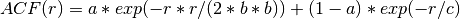
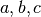
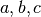

interfaces.afni.utils¶
ABoverlap¶
Wraps command 3dABoverlap
Output (to screen) is a count of various things about how the automasks of datasets A and B overlap or don’t overlap.
For complete details, see the 3dABoverlap Documentation.
Examples¶
>>> from nipype.interfaces import afni
>>> aboverlap = afni.ABoverlap()
>>> aboverlap.inputs.in_file_a = 'functional.nii'
>>> aboverlap.inputs.in_file_b = 'structural.nii'
>>> aboverlap.inputs.out_file = 'out.mask_ae_overlap.txt'
>>> aboverlap.cmdline
'3dABoverlap functional.nii structural.nii |& tee out.mask_ae_overlap.txt'
>>> res = aboverlap.run() # doctest: +SKIP
Inputs:
[Mandatory]
in_file_a: (an existing file name)
input file A
flag: %s, position: -3
in_file_b: (an existing file name)
input file B
flag: %s, position: -2
[Optional]
args: (a unicode string)
Additional parameters to the command
flag: %s
environ: (a dictionary with keys which are a bytes or None or a value
of class 'str' and with values which are a bytes or None or a value
of class 'str', nipype default value: {})
Environment variables
no_automask: (a boolean)
consider input datasets as masks
flag: -no_automask
num_threads: (an integer (int or long), nipype default value: 1)
set number of threads
out_file: (a file name)
collect output to a file
flag: |& tee %s, position: -1
outputtype: ('NIFTI' or 'AFNI' or 'NIFTI_GZ')
AFNI output filetype
quiet: (a boolean)
be as quiet as possible (without being entirely mute)
flag: -quiet
verb: (a boolean)
print out some progress reports (to stderr)
flag: -verb
Outputs:
out_file: (an existing file name)
output file
References:: BibTeX(‘@article{Cox1996,author={R.W. Cox},title={AFNI: software for analysis and visualization of functional magnetic resonance neuroimages},journal={Computers and Biomedical research},volume={29},number={3},pages={162-173},year={1996},}’, key=’Cox1996’) BibTeX(‘@article{CoxHyde1997,author={R.W. Cox and J.S. Hyde},title={Software tools for analysis and visualization of fMRI data},journal={NMR in Biomedicine},volume={10},number={45},pages={171-178},year={1997},}’, key=’CoxHyde1997’)
AFNItoNIFTI¶
Wraps command 3dAFNItoNIFTI
Converts AFNI format files to NIFTI format. This can also convert 2D or 1D data, which you can numpy.squeeze() to remove extra dimensions.
For complete details, see the 3dAFNItoNIFTI Documentation.
Examples¶
>>> from nipype.interfaces import afni
>>> a2n = afni.AFNItoNIFTI()
>>> a2n.inputs.in_file = 'afni_output.3D'
>>> a2n.inputs.out_file = 'afni_output.nii'
>>> a2n.cmdline
'3dAFNItoNIFTI -prefix afni_output.nii afni_output.3D'
>>> res = a2n.run() # doctest: +SKIP
Inputs:
[Mandatory]
in_file: (an existing file name)
input file to 3dAFNItoNIFTI
flag: %s, position: -1
[Optional]
args: (a unicode string)
Additional parameters to the command
flag: %s
denote: (a boolean)
When writing the AFNI extension field, remove text notes that might
contain subject identifying information.
flag: -denote
environ: (a dictionary with keys which are a bytes or None or a value
of class 'str' and with values which are a bytes or None or a value
of class 'str', nipype default value: {})
Environment variables
newid: (a boolean)
Give the new dataset a new AFNI ID code, to distinguish it from the
input dataset.
flag: -newid
mutually_exclusive: oldid
num_threads: (an integer (int or long), nipype default value: 1)
set number of threads
oldid: (a boolean)
Give the new dataset the input datasets AFNI ID code.
flag: -oldid
mutually_exclusive: newid
out_file: (a file name)
output image file name
flag: -prefix %s
outputtype: ('NIFTI' or 'AFNI' or 'NIFTI_GZ')
AFNI output filetype
pure: (a boolean)
Do NOT write an AFNI extension field into the output file. Only use
this option if needed. You can also use the 'nifti_tool' program to
strip extensions from a file.
flag: -pure
Outputs:
out_file: (an existing file name)
output file
References:: BibTeX(‘@article{Cox1996,author={R.W. Cox},title={AFNI: software for analysis and visualization of functional magnetic resonance neuroimages},journal={Computers and Biomedical research},volume={29},number={3},pages={162-173},year={1996},}’, key=’Cox1996’) BibTeX(‘@article{CoxHyde1997,author={R.W. Cox and J.S. Hyde},title={Software tools for analysis and visualization of fMRI data},journal={NMR in Biomedicine},volume={10},number={45},pages={171-178},year={1997},}’, key=’CoxHyde1997’)
Autobox¶
Wraps command 3dAutobox
Computes size of a box that fits around the volume. Also can be used to crop the volume to that box.
For complete details, see the 3dAutobox Documentation.
Examples¶
>>> from nipype.interfaces import afni
>>> abox = afni.Autobox()
>>> abox.inputs.in_file = 'structural.nii'
>>> abox.inputs.padding = 5
>>> abox.cmdline
'3dAutobox -input structural.nii -prefix structural_autobox -npad 5'
>>> res = abox.run() # doctest: +SKIP
Inputs:
[Mandatory]
in_file: (an existing file name)
input file
flag: -input %s
[Optional]
args: (a unicode string)
Additional parameters to the command
flag: %s
environ: (a dictionary with keys which are a bytes or None or a value
of class 'str' and with values which are a bytes or None or a value
of class 'str', nipype default value: {})
Environment variables
no_clustering: (a boolean)
Don't do any clustering to find box. Any non-zero voxel will be
preserved in the cropped volume. The default method uses some
clustering to find the cropping box, and will clip off small
isolated blobs.
flag: -noclust
num_threads: (an integer (int or long), nipype default value: 1)
set number of threads
out_file: (a file name)
flag: -prefix %s
outputtype: ('NIFTI' or 'AFNI' or 'NIFTI_GZ')
AFNI output filetype
padding: (an integer (int or long))
Number of extra voxels to pad on each side of box
flag: -npad %d
Outputs:
out_file: (a file name)
output file
x_max: (an integer (int or long))
x_min: (an integer (int or long))
y_max: (an integer (int or long))
y_min: (an integer (int or long))
z_max: (an integer (int or long))
z_min: (an integer (int or long))
References:: BibTeX(‘@article{Cox1996,author={R.W. Cox},title={AFNI: software for analysis and visualization of functional magnetic resonance neuroimages},journal={Computers and Biomedical research},volume={29},number={3},pages={162-173},year={1996},}’, key=’Cox1996’) BibTeX(‘@article{CoxHyde1997,author={R.W. Cox and J.S. Hyde},title={Software tools for analysis and visualization of fMRI data},journal={NMR in Biomedicine},volume={10},number={45},pages={171-178},year={1997},}’, key=’CoxHyde1997’)
Axialize¶
Wraps command 3daxialize
- Read in a dataset and write it out as a new dataset
- with the data brick oriented as axial slices.
For complete details, see the 3dcopy Documentation.
Examples¶
>>> from nipype.interfaces import afni
>>> axial3d = afni.Axialize()
>>> axial3d.inputs.in_file = 'functional.nii'
>>> axial3d.inputs.out_file = 'axialized.nii'
>>> axial3d.cmdline
'3daxialize -prefix axialized.nii functional.nii'
>>> res = axial3d.run() # doctest: +SKIP
Inputs:
[Mandatory]
in_file: (an existing file name)
input file to 3daxialize
flag: %s, position: -2
[Optional]
args: (a unicode string)
Additional parameters to the command
flag: %s
axial: (a boolean)
Do axial slice order [-orient RAI]This is the default AFNI axial
order, andis the one currently required by thevolume rendering
plugin; this is alsothe default orientation output by thisprogram
(hence the program's name).
flag: -axial
mutually_exclusive: coronal, sagittal
coronal: (a boolean)
Do coronal slice order [-orient RSA]
flag: -coronal
mutually_exclusive: sagittal, axial
environ: (a dictionary with keys which are a bytes or None or a value
of class 'str' and with values which are a bytes or None or a value
of class 'str', nipype default value: {})
Environment variables
num_threads: (an integer (int or long), nipype default value: 1)
set number of threads
orientation: (a unicode string)
new orientation code
flag: -orient %s
out_file: (a file name)
output image file name
flag: -prefix %s
outputtype: ('NIFTI' or 'AFNI' or 'NIFTI_GZ')
AFNI output filetype
sagittal: (a boolean)
Do sagittal slice order [-orient ASL]
flag: -sagittal
mutually_exclusive: coronal, axial
verb: (a boolean)
Print out a progerss report
flag: -verb
Outputs:
out_file: (an existing file name)
output file
References:: BibTeX(‘@article{Cox1996,author={R.W. Cox},title={AFNI: software for analysis and visualization of functional magnetic resonance neuroimages},journal={Computers and Biomedical research},volume={29},number={3},pages={162-173},year={1996},}’, key=’Cox1996’) BibTeX(‘@article{CoxHyde1997,author={R.W. Cox and J.S. Hyde},title={Software tools for analysis and visualization of fMRI data},journal={NMR in Biomedicine},volume={10},number={45},pages={171-178},year={1997},}’, key=’CoxHyde1997’)
BrickStat¶
Wraps command 3dBrickStat
Computes maximum and/or minimum voxel values of an input dataset. TODO Add optional arguments.
For complete details, see the 3dBrickStat Documentation.
Examples¶
>>> from nipype.interfaces import afni
>>> brickstat = afni.BrickStat()
>>> brickstat.inputs.in_file = 'functional.nii'
>>> brickstat.inputs.mask = 'skeleton_mask.nii.gz'
>>> brickstat.inputs.min = True
>>> brickstat.cmdline
'3dBrickStat -min -mask skeleton_mask.nii.gz functional.nii'
>>> res = brickstat.run() # doctest: +SKIP
Inputs:
[Mandatory]
in_file: (an existing file name)
input file to 3dmaskave
flag: %s, position: -1
[Optional]
args: (a unicode string)
Additional parameters to the command
flag: %s
environ: (a dictionary with keys which are a bytes or None or a value
of class 'str' and with values which are a bytes or None or a value
of class 'str', nipype default value: {})
Environment variables
mask: (an existing file name)
-mask dset = use dset as mask to include/exclude voxels
flag: -mask %s, position: 2
max: (a boolean)
print the maximum value in the dataset
flag: -max
mean: (a boolean)
print the mean value in the dataset
flag: -mean
min: (a boolean)
print the minimum value in dataset
flag: -min, position: 1
percentile: (a tuple of the form: (a float, a float, a float))
p0 ps p1 write the percentile values starting at p0% and ending at
p1% at a step of ps%. only one sub-brick is accepted.
flag: -percentile %.3f %.3f %.3f
slow: (a boolean)
read the whole dataset to find the min and max values
flag: -slow
sum: (a boolean)
print the sum of values in the dataset
flag: -sum
var: (a boolean)
print the variance in the dataset
flag: -var
Outputs:
min_val: (a float)
output
Bucket¶
Wraps command 3dbucket
Concatenate sub-bricks from input datasets into one big ‘bucket’ dataset.
For complete details, see the 3dbucket Documentation.
Examples¶
>>> from nipype.interfaces import afni
>>> bucket = afni.Bucket()
>>> bucket.inputs.in_file = [('functional.nii',"{2..$}"), ('functional.nii',"{1}")]
>>> bucket.inputs.out_file = 'vr_base'
>>> bucket.cmdline
"3dbucket -prefix vr_base functional.nii'{2..$}' functional.nii'{1}'"
>>> res = bucket.run() # doctest: +SKIP
Inputs:
[Mandatory]
in_file: (a list of items which are a tuple of the form: (an existing
file name, a unicode string))
List of tuples of input datasets and subbrick selection stringsas
described in more detail in the following afni help stringInput
dataset specified using one of these forms: 'prefix+view',
'prefix+view.HEAD', or 'prefix+view.BRIK'.You can also add a sub-
brick selection list after the end of thedataset name. This allows
only a subset of the sub-bricks to beincluded into the output (by
default, all of the input datasetis copied into the output). A sub-
brick selection list looks likeone of the following forms:
fred+orig[5] ==> use only sub-brick #5 fred+orig[5,9,17] ==> use #5,
#9, and #17 fred+orig[5..8] or [5-8] ==> use #5, #6, #7, and #8
fred+orig[5..13(2)] or [5-13(2)] ==> use #5, #7, #9, #11, and
#13Sub-brick indexes start at 0. You can use the character '$'to
indicate the last sub-brick in a dataset; for example, youcan select
every third sub-brick by using the selection list
fred+orig[0..$(3)]N.B.: The sub-bricks are output in the order
specified, which may not be the order in the original datasets. For
example, using fred+orig[0..$(2),1..$(2)] will cause the sub-bricks
in fred+orig to be output into the new dataset in an interleaved
fashion. Using fred+orig[$..0] will reverse the order of the sub-
bricks in the output.N.B.: Bucket datasets have multiple sub-bricks,
but do NOT have a time dimension. You can input sub-bricks from a
3D+time dataset into a bucket dataset. You can use the '3dinfo'
program to see how many sub-bricks a 3D+time or a bucket dataset
contains.N.B.: In non-bucket functional datasets (like the 'fico'
datasets output by FIM, or the 'fitt' datasets output by 3dttest),
sub-brick [0] is the 'intensity' and sub-brick [1] is the
statistical parameter used as a threshold. Thus, to create a bucket
dataset using the intensity from dataset A and the threshold from
dataset B, and calling the output dataset C, you would type 3dbucket
-prefix C -fbuc 'A+orig[0]' -fbuc 'B+orig[1]'WARNING: using this
program, it is possible to create a dataset that has different basic
datum types for different sub-bricks (e.g., shorts for brick 0,
floats for brick 1). Do NOT do this! Very few AFNI programs will
work correctly with such datasets!
flag: %s, position: -1
[Optional]
args: (a unicode string)
Additional parameters to the command
flag: %s
environ: (a dictionary with keys which are a bytes or None or a value
of class 'str' and with values which are a bytes or None or a value
of class 'str', nipype default value: {})
Environment variables
num_threads: (an integer (int or long), nipype default value: 1)
set number of threads
out_file: (a file name)
flag: -prefix %s
outputtype: ('NIFTI' or 'AFNI' or 'NIFTI_GZ')
AFNI output filetype
Outputs:
out_file: (an existing file name)
output file
References:: BibTeX(‘@article{Cox1996,author={R.W. Cox},title={AFNI: software for analysis and visualization of functional magnetic resonance neuroimages},journal={Computers and Biomedical research},volume={29},number={3},pages={162-173},year={1996},}’, key=’Cox1996’) BibTeX(‘@article{CoxHyde1997,author={R.W. Cox and J.S. Hyde},title={Software tools for analysis and visualization of fMRI data},journal={NMR in Biomedicine},volume={10},number={45},pages={171-178},year={1997},}’, key=’CoxHyde1997’)
Calc¶
Wraps command 3dcalc
This program does voxel-by-voxel arithmetic on 3D datasets.
For complete details, see the 3dcalc Documentation.
Examples¶
>>> from nipype.interfaces import afni
>>> calc = afni.Calc()
>>> calc.inputs.in_file_a = 'functional.nii'
>>> calc.inputs.in_file_b = 'functional2.nii'
>>> calc.inputs.expr='a*b'
>>> calc.inputs.out_file = 'functional_calc.nii.gz'
>>> calc.inputs.outputtype = 'NIFTI'
>>> calc.cmdline # doctest: +ELLIPSIS
'3dcalc -a functional.nii -b functional2.nii -expr "a*b" -prefix functional_calc.nii.gz'
>>> res = calc.run() # doctest: +SKIP
>>> from nipype.interfaces import afni
>>> calc = afni.Calc()
>>> calc.inputs.in_file_a = 'functional.nii'
>>> calc.inputs.expr = '1'
>>> calc.inputs.out_file = 'rm.epi.all1'
>>> calc.inputs.overwrite = True
>>> calc.cmdline
'3dcalc -a functional.nii -expr "1" -prefix rm.epi.all1 -overwrite'
>>> res = calc.run() # doctest: +SKIP
Inputs:
[Mandatory]
expr: (a unicode string)
expr
flag: -expr "%s", position: 3
in_file_a: (an existing file name)
input file to 3dcalc
flag: -a %s, position: 0
[Optional]
args: (a unicode string)
Additional parameters to the command
flag: %s
environ: (a dictionary with keys which are a bytes or None or a value
of class 'str' and with values which are a bytes or None or a value
of class 'str', nipype default value: {})
Environment variables
in_file_b: (an existing file name)
operand file to 3dcalc
flag: -b %s, position: 1
in_file_c: (an existing file name)
operand file to 3dcalc
flag: -c %s, position: 2
num_threads: (an integer (int or long), nipype default value: 1)
set number of threads
other: (a file name)
other options
out_file: (a file name)
output image file name
flag: -prefix %s
outputtype: ('NIFTI' or 'AFNI' or 'NIFTI_GZ')
AFNI output filetype
overwrite: (a boolean)
overwrite output
flag: -overwrite
single_idx: (an integer (int or long))
volume index for in_file_a
start_idx: (an integer (int or long))
start index for in_file_a
requires: stop_idx
stop_idx: (an integer (int or long))
stop index for in_file_a
requires: start_idx
Outputs:
out_file: (an existing file name)
output file
References:: BibTeX(‘@article{Cox1996,author={R.W. Cox},title={AFNI: software for analysis and visualization of functional magnetic resonance neuroimages},journal={Computers and Biomedical research},volume={29},number={3},pages={162-173},year={1996},}’, key=’Cox1996’) BibTeX(‘@article{CoxHyde1997,author={R.W. Cox and J.S. Hyde},title={Software tools for analysis and visualization of fMRI data},journal={NMR in Biomedicine},volume={10},number={45},pages={171-178},year={1997},}’, key=’CoxHyde1997’)
Cat¶
Wraps command 1dcat
1dcat takes as input one or more 1D files, and writes out a 1D file containing the side-by-side concatenation of all or a subset of the columns from the input files.
For complete details, see the 1dcat Documentation.
Examples¶
>>> from nipype.interfaces import afni
>>> cat1d = afni.Cat()
>>> cat1d.inputs.sel = "'[0,2]'"
>>> cat1d.inputs.in_files = ['f1.1D', 'f2.1D']
>>> cat1d.inputs.out_file = 'catout.1d'
>>> cat1d.cmdline
"1dcat -sel '[0,2]' f1.1D f2.1D > catout.1d"
>>> res = cat1d.run() # doctest: +SKIP
Inputs:
[Mandatory]
in_files: (a list of items which are an existing file name)
flag: %s, position: -2
out_file: (a file name, nipype default value: catout.1d)
output (concatenated) file name
flag: > %s, position: -1
[Optional]
args: (a unicode string)
Additional parameters to the command
flag: %s
environ: (a dictionary with keys which are a bytes or None or a value
of class 'str' and with values which are a bytes or None or a value
of class 'str', nipype default value: {})
Environment variables
keepfree: (a boolean)
Keep only columns that are marked as 'free' in the 3dAllineate
header from '-1Dparam_save'. If there is no such header, all columns
are kept.
flag: -nonfixed
num_threads: (an integer (int or long), nipype default value: 1)
set number of threads
omitconst: (a boolean)
Omit columns that are identically constant from output.
flag: -nonconst
out_cint: (a boolean)
specifiy int, rounded up, data type for output
mutually_exclusive: out_format, out_nice, out_double, out_fint,
out_int
out_double: (a boolean)
specifiy double data type for output
flag: -d
mutually_exclusive: out_format, out_nice, out_int, out_fint,
out_cint
out_fint: (a boolean)
specifiy int, rounded down, data type for output
flag: -f
mutually_exclusive: out_format, out_nice, out_double, out_int,
out_cint
out_format: ('int' or 'nice' or 'double' or 'fint' or 'cint')
specify data type for output. Valid types are 'int', 'nice',
'double', 'fint', and 'cint'.
flag: -form %s
mutually_exclusive: out_int, out_nice, out_double, out_fint,
out_cint
out_int: (a boolean)
specifiy int data type for output
flag: -i
mutually_exclusive: out_format, out_nice, out_double, out_fint,
out_cint
out_nice: (a boolean)
specifiy nice data type for output
flag: -n
mutually_exclusive: out_format, out_int, out_double, out_fint,
out_cint
outputtype: ('NIFTI' or 'AFNI' or 'NIFTI_GZ')
AFNI output filetype
sel: (a unicode string)
Apply the same column/row selection string to all filenames on the
command line.
flag: -sel %s
stack: (a boolean)
Stack the columns of the resultant matrix in the output.
flag: -stack
Outputs:
out_file: (an existing file name)
output file
References:: BibTeX(‘@article{Cox1996,author={R.W. Cox},title={AFNI: software for analysis and visualization of functional magnetic resonance neuroimages},journal={Computers and Biomedical research},volume={29},number={3},pages={162-173},year={1996},}’, key=’Cox1996’) BibTeX(‘@article{CoxHyde1997,author={R.W. Cox and J.S. Hyde},title={Software tools for analysis and visualization of fMRI data},journal={NMR in Biomedicine},volume={10},number={45},pages={171-178},year={1997},}’, key=’CoxHyde1997’)
CatMatvec¶
Wraps command cat_matvec
Catenates 3D rotation+shift matrix+vector transformations.
For complete details, see the cat_matvec Documentation.
Examples¶
>>> from nipype.interfaces import afni
>>> cmv = afni.CatMatvec()
>>> cmv.inputs.in_file = [('structural.BRIK::WARP_DATA','I')]
>>> cmv.inputs.out_file = 'warp.anat.Xat.1D'
>>> cmv.cmdline
'cat_matvec structural.BRIK::WARP_DATA -I > warp.anat.Xat.1D'
>>> res = cmv.run() # doctest: +SKIP
Inputs:
[Mandatory]
in_file: (a list of items which are a tuple of the form: (a unicode
string, a unicode string))
list of tuples of mfiles and associated opkeys
flag: %s, position: -2
out_file: (a file name)
File to write concattenated matvecs to
flag: > %s, position: -1
[Optional]
args: (a unicode string)
Additional parameters to the command
flag: %s
environ: (a dictionary with keys which are a bytes or None or a value
of class 'str' and with values which are a bytes or None or a value
of class 'str', nipype default value: {})
Environment variables
fourxfour: (a boolean)
Output matrix in augmented form (last row is 0 0 0 1)This option
does not work with -MATRIX or -ONELINE
flag: -4x4
mutually_exclusive: matrix, oneline
matrix: (a boolean)
indicates that the resulting matrix willbe written to outfile in the
'MATRIX(...)' format (FORM 3).This feature could be used, with
clever scripting, to inputa matrix directly on the command line to
program 3dWarp.
flag: -MATRIX
mutually_exclusive: oneline, fourxfour
num_threads: (an integer (int or long), nipype default value: 1)
set number of threads
oneline: (a boolean)
indicates that the resulting matrixwill simply be written as 12
numbers on one line.
flag: -ONELINE
mutually_exclusive: matrix, fourxfour
outputtype: ('NIFTI' or 'AFNI' or 'NIFTI_GZ')
AFNI output filetype
Outputs:
out_file: (an existing file name)
output file
References:: BibTeX(‘@article{Cox1996,author={R.W. Cox},title={AFNI: software for analysis and visualization of functional magnetic resonance neuroimages},journal={Computers and Biomedical research},volume={29},number={3},pages={162-173},year={1996},}’, key=’Cox1996’) BibTeX(‘@article{CoxHyde1997,author={R.W. Cox and J.S. Hyde},title={Software tools for analysis and visualization of fMRI data},journal={NMR in Biomedicine},volume={10},number={45},pages={171-178},year={1997},}’, key=’CoxHyde1997’)
CenterMass¶
Wraps command 3dCM
Computes center of mass using 3dCM command
Note
By default, the output is (x,y,z) values in DICOM coordinates. But as of Dec, 2016, there are now command line switches for other options.
For complete details, see the 3dCM Documentation.
Examples¶
>>> from nipype.interfaces import afni
>>> cm = afni.CenterMass()
>>> cm.inputs.in_file = 'structural.nii'
>>> cm.inputs.cm_file = 'cm.txt'
>>> cm.inputs.roi_vals = [2, 10]
>>> cm.cmdline
'3dCM -roi_vals 2 10 structural.nii > cm.txt'
>>> res = 3dcm.run() # doctest: +SKIP
Inputs:
[Mandatory]
in_file: (an existing file name)
input file to 3dCM
flag: %s, position: -2
[Optional]
all_rois: (a boolean)
Don't bother listing the values of ROIs you want: The program will
find all of them and produce a full list
flag: -all_rois
args: (a unicode string)
Additional parameters to the command
flag: %s
automask: (a boolean)
Generate the mask automatically
flag: -automask
cm_file: (a file name)
File to write center of mass to
flag: > %s, position: -1
environ: (a dictionary with keys which are a bytes or None or a value
of class 'str' and with values which are a bytes or None or a value
of class 'str', nipype default value: {})
Environment variables
local_ijk: (a boolean)
Output values as (i,j,k) in local orienation
flag: -local_ijk
mask_file: (an existing file name)
Only voxels with nonzero values in the provided mask will be
averaged.
flag: -mask %s
roi_vals: (a list of items which are an integer (int or long))
Compute center of mass for each blob with voxel value of v0, v1, v2,
etc. This option is handy for getting ROI centers of mass.
flag: -roi_vals %s
set_cm: (a tuple of the form: (a float, a float, a float))
After computing the center of mass, set the origin fields in the
header so that the center of mass will be at (x,y,z) in DICOM
coords.
flag: -set %f %f %f
Outputs:
cm: (a list of items which are a tuple of the form: (a float, a
float, a float))
center of mass
cm_file: (a file name)
file with the center of mass coordinates
out_file: (an existing file name)
output file
ConvertDset¶
Wraps command ConvertDset
Converts a surface dataset from one format to another.
For complete details, see the ConvertDset Documentation.
Examples¶
>>> from nipype.interfaces import afni
>>> convertdset = afni.ConvertDset()
>>> convertdset.inputs.in_file = 'lh.pial_converted.gii'
>>> convertdset.inputs.out_type = 'niml_asc'
>>> convertdset.inputs.out_file = 'lh.pial_converted.niml.dset'
>>> convertdset.cmdline
'ConvertDset -o_niml_asc -input lh.pial_converted.gii -prefix lh.pial_converted.niml.dset'
>>> res = convertdset.run() # doctest: +SKIP
Inputs:
[Mandatory]
in_file: (an existing file name)
input file to ConvertDset
flag: -input %s, position: -2
out_file: (a file name)
output file for ConvertDset
flag: -prefix %s, position: -1
out_type: ('niml' or 'niml_asc' or 'niml_bi' or '1D' or '1Dp' or
'1Dpt' or 'gii' or 'gii_asc' or 'gii_b64' or 'gii_b64gz')
output type
flag: -o_%s, position: 0
[Optional]
args: (a unicode string)
Additional parameters to the command
flag: %s
environ: (a dictionary with keys which are a bytes or None or a value
of class 'str' and with values which are a bytes or None or a value
of class 'str', nipype default value: {})
Environment variables
num_threads: (an integer (int or long), nipype default value: 1)
set number of threads
outputtype: ('NIFTI' or 'AFNI' or 'NIFTI_GZ')
AFNI output filetype
Outputs:
out_file: (an existing file name)
output file
Copy¶
Wraps command 3dcopy
Copies an image of one type to an image of the same or different type using 3dcopy command
For complete details, see the 3dcopy Documentation.
Examples¶
>>> from nipype.interfaces import afni
>>> copy3d = afni.Copy()
>>> copy3d.inputs.in_file = 'functional.nii'
>>> copy3d.cmdline
'3dcopy functional.nii functional_copy'
>>> res = copy3d.run() # doctest: +SKIP
>>> from copy import deepcopy
>>> copy3d_2 = deepcopy(copy3d)
>>> copy3d_2.inputs.outputtype = 'NIFTI'
>>> copy3d_2.cmdline
'3dcopy functional.nii functional_copy.nii'
>>> res = copy3d_2.run() # doctest: +SKIP
>>> copy3d_3 = deepcopy(copy3d)
>>> copy3d_3.inputs.outputtype = 'NIFTI_GZ'
>>> copy3d_3.cmdline
'3dcopy functional.nii functional_copy.nii.gz'
>>> res = copy3d_3.run() # doctest: +SKIP
>>> copy3d_4 = deepcopy(copy3d)
>>> copy3d_4.inputs.out_file = 'new_func.nii'
>>> copy3d_4.cmdline
'3dcopy functional.nii new_func.nii'
>>> res = copy3d_4.run() # doctest: +SKIP
Inputs:
[Mandatory]
in_file: (an existing file name)
input file to 3dcopy
flag: %s, position: -2
[Optional]
args: (a unicode string)
Additional parameters to the command
flag: %s
environ: (a dictionary with keys which are a bytes or None or a value
of class 'str' and with values which are a bytes or None or a value
of class 'str', nipype default value: {})
Environment variables
num_threads: (an integer (int or long), nipype default value: 1)
set number of threads
out_file: (a file name)
output image file name
flag: %s, position: -1
outputtype: ('NIFTI' or 'AFNI' or 'NIFTI_GZ')
AFNI output filetype
verbose: (a boolean)
print progress reports
flag: -verb
Outputs:
out_file: (an existing file name)
output file
References:: BibTeX(‘@article{Cox1996,author={R.W. Cox},title={AFNI: software for analysis and visualization of functional magnetic resonance neuroimages},journal={Computers and Biomedical research},volume={29},number={3},pages={162-173},year={1996},}’, key=’Cox1996’) BibTeX(‘@article{CoxHyde1997,author={R.W. Cox and J.S. Hyde},title={Software tools for analysis and visualization of fMRI data},journal={NMR in Biomedicine},volume={10},number={45},pages={171-178},year={1997},}’, key=’CoxHyde1997’)
Dot¶
Wraps command 3dDot
Correlation coefficient between sub-brick pairs. All datasets in in_files list will be concatenated. You can use sub-brick selectors in the file specification. Note: This program is not efficient when more than two subbricks are input. For complete details, see the 3ddot Documentation.
>>> from nipype.interfaces import afni
>>> dot = afni.Dot()
>>> dot.inputs.in_files = ['functional.nii[0]', 'structural.nii']
>>> dot.inputs.dodice = True
>>> dot.inputs.out_file = 'out.mask_ae_dice.txt'
>>> dot.cmdline
'3dDot -dodice functional.nii[0] structural.nii |& tee out.mask_ae_dice.txt'
>>> res = copy3d.run() # doctest: +SKIP
Inputs:
[Mandatory]
[Optional]
args: (a unicode string)
Additional parameters to the command
flag: %s
demean: (a boolean)
Remove the mean from each volume prior to computing the correlation
flag: -demean
docoef: (a boolean)
Return the least square fit coefficients {{a,b}} so that dset2 is
approximately a + b*dset1
flag: -docoef
docor: (a boolean)
Return the correlation coefficient (default).
flag: -docor
dodice: (a boolean)
Return the Dice coefficient (the Sorensen-Dice index).
flag: -dodice
dodot: (a boolean)
Return the dot product (unscaled).
flag: -dodot
doeta2: (a boolean)
Return eta-squared (Cohen, NeuroImage 2008).
flag: -doeta2
dosums: (a boolean)
Return the 6 numbers xbar=<x> ybar=<y> <(x-xbar)^2> <(y-ybar)^2>
<(x-xbar)(y-ybar)> and the correlation coefficient.
flag: -dosums
environ: (a dictionary with keys which are a bytes or None or a value
of class 'str' and with values which are a bytes or None or a value
of class 'str', nipype default value: {})
Environment variables
full: (a boolean)
Compute the whole matrix. A waste of time, but handy for parsing.
flag: -full
in_files: (a list of items which are a file name)
list of input files, possibly with subbrick selectors
flag: %s ..., position: -2
mask: (a file name)
Use this dataset as a mask
flag: -mask %s
mrange: (a tuple of the form: (a float, a float))
Means to further restrict the voxels from 'mset' so thatonly those
mask values within this range (inclusive) willbe used.
flag: -mrange %s %s
num_threads: (an integer (int or long), nipype default value: 1)
set number of threads
out_file: (a file name)
collect output to a file
flag: |& tee %s, position: -1
outputtype: ('NIFTI' or 'AFNI' or 'NIFTI_GZ')
AFNI output filetype
show_labels: (a boolean)
Print sub-brick labels to help identify what is being correlated.
This option is useful whenyou have more than 2 sub-bricks at input.
flag: -show_labels
upper: (a boolean)
Compute upper triangular matrix
flag: -upper
Outputs:
out_file: (an existing file name)
output file
References:: BibTeX(‘@article{Cox1996,author={R.W. Cox},title={AFNI: software for analysis and visualization of functional magnetic resonance neuroimages},journal={Computers and Biomedical research},volume={29},number={3},pages={162-173},year={1996},}’, key=’Cox1996’) BibTeX(‘@article{CoxHyde1997,author={R.W. Cox and J.S. Hyde},title={Software tools for analysis and visualization of fMRI data},journal={NMR in Biomedicine},volume={10},number={45},pages={171-178},year={1997},}’, key=’CoxHyde1997’)
Edge3¶
Wraps command 3dedge3
Does 3D Edge detection using the library 3DEdge by Gregoire Malandain (gregoire.malandain@sophia.inria.fr).
For complete details, see the 3dedge3 Documentation.
- references_ = [{‘entry’: BibTeX(‘@article{Deriche1987,’
- ‘author={R. Deriche},’ ‘title={Optimal edge detection using recursive filtering},’ ‘journal={International Journal of Computer Vision},’ ‘volume={2},’, ‘pages={167-187},’ ‘year={1987},’ ‘}’),
‘tags’: [‘method’], },
- {‘entry’: BibTeX(‘@article{MongaDericheMalandainCocquerez1991,’
- ‘author={O. Monga, R. Deriche, G. Malandain, J.P. Cocquerez},’ ‘title={Recursive filtering and edge tracking: two primary tools for 3D edge detection},’ ‘journal={Image and vision computing},’ ‘volume={9},’, ‘pages={203-214},’ ‘year={1991},’ ‘}’),
‘tags’: [‘method’], },
~
Examples¶
>>> from nipype.interfaces import afni
>>> edge3 = afni.Edge3()
>>> edge3.inputs.in_file = 'functional.nii'
>>> edge3.inputs.out_file = 'edges.nii'
>>> edge3.inputs.datum = 'byte'
>>> edge3.cmdline
'3dedge3 -input functional.nii -datum byte -prefix edges.nii'
>>> res = edge3.run() # doctest: +SKIP
Inputs:
[Mandatory]
in_file: (an existing file name)
input file to 3dedge3
flag: -input %s, position: 0
[Optional]
args: (a unicode string)
Additional parameters to the command
flag: %s
datum: ('byte' or 'short' or 'float')
specify data type for output. Valid types are 'byte', 'short' and
'float'.
flag: -datum %s
environ: (a dictionary with keys which are a bytes or None or a value
of class 'str' and with values which are a bytes or None or a value
of class 'str', nipype default value: {})
Environment variables
fscale: (a boolean)
Force scaling of the output to the maximum integer range.
flag: -fscale
mutually_exclusive: gscale, nscale, scale_floats
gscale: (a boolean)
Same as '-fscale', but also forces each output sub-brick to to get
the same scaling factor.
flag: -gscale
mutually_exclusive: fscale, nscale, scale_floats
nscale: (a boolean)
Don't do any scaling on output to byte or short datasets.
flag: -nscale
mutually_exclusive: fscale, gscale, scale_floats
num_threads: (an integer (int or long), nipype default value: 1)
set number of threads
out_file: (a file name)
output image file name
flag: -prefix %s, position: -1
outputtype: ('NIFTI' or 'AFNI' or 'NIFTI_GZ')
AFNI output filetype
scale_floats: (a float)
Multiply input by VAL, but only if the input datum is float. This is
needed when the input dataset has a small range, like 0 to 2.0 for
instance. With such a range, very few edges are detected due to what
I suspect to be truncation problems. Multiplying such a dataset by
10000 fixes the problem and the scaling is undone at the output.
flag: -scale_floats %f
mutually_exclusive: fscale, gscale, nscale
verbose: (a boolean)
Print out some information along the way.
flag: -verbose
Outputs:
out_file: (an existing file name)
output file
References:: BibTeX(‘@article{Cox1996,author={R.W. Cox},title={AFNI: software for analysis and visualization of functional magnetic resonance neuroimages},journal={Computers and Biomedical research},volume={29},number={3},pages={162-173},year={1996},}’, key=’Cox1996’) BibTeX(‘@article{CoxHyde1997,author={R.W. Cox and J.S. Hyde},title={Software tools for analysis and visualization of fMRI data},journal={NMR in Biomedicine},volume={10},number={45},pages={171-178},year={1997},}’, key=’CoxHyde1997’)
Eval¶
Wraps command 1deval
Evaluates an expression that may include columns of data from one or more text files.
For complete details, see the 1deval Documentation.
Examples¶
>>> from nipype.interfaces import afni
>>> eval = afni.Eval()
>>> eval.inputs.in_file_a = 'seed.1D'
>>> eval.inputs.in_file_b = 'resp.1D'
>>> eval.inputs.expr = 'a*b'
>>> eval.inputs.out1D = True
>>> eval.inputs.out_file = 'data_calc.1D'
>>> eval.cmdline
'1deval -a seed.1D -b resp.1D -expr "a*b" -1D -prefix data_calc.1D'
>>> res = eval.run() # doctest: +SKIP
Inputs:
[Mandatory]
expr: (a unicode string)
expr
flag: -expr "%s", position: 3
in_file_a: (an existing file name)
input file to 1deval
flag: -a %s, position: 0
[Optional]
args: (a unicode string)
Additional parameters to the command
flag: %s
environ: (a dictionary with keys which are a bytes or None or a value
of class 'str' and with values which are a bytes or None or a value
of class 'str', nipype default value: {})
Environment variables
in_file_b: (an existing file name)
operand file to 1deval
flag: -b %s, position: 1
in_file_c: (an existing file name)
operand file to 1deval
flag: -c %s, position: 2
num_threads: (an integer (int or long), nipype default value: 1)
set number of threads
other: (a file name)
other options
out1D: (a boolean)
output in 1D
flag: -1D
out_file: (a file name)
output image file name
flag: -prefix %s
outputtype: ('NIFTI' or 'AFNI' or 'NIFTI_GZ')
AFNI output filetype
single_idx: (an integer (int or long))
volume index for in_file_a
start_idx: (an integer (int or long))
start index for in_file_a
requires: stop_idx
stop_idx: (an integer (int or long))
stop index for in_file_a
requires: start_idx
Outputs:
out_file: (an existing file name)
output file
References:: BibTeX(‘@article{Cox1996,author={R.W. Cox},title={AFNI: software for analysis and visualization of functional magnetic resonance neuroimages},journal={Computers and Biomedical research},volume={29},number={3},pages={162-173},year={1996},}’, key=’Cox1996’) BibTeX(‘@article{CoxHyde1997,author={R.W. Cox and J.S. Hyde},title={Software tools for analysis and visualization of fMRI data},journal={NMR in Biomedicine},volume={10},number={45},pages={171-178},year={1997},}’, key=’CoxHyde1997’)
FWHMx¶
Wraps command 3dFWHMx
Unlike the older 3dFWHM, this program computes FWHMs for all sub-bricks in the input dataset, each one separately. The output for each one is written to the file specified by ‘-out’. The mean (arithmetic or geometric) of all the FWHMs along each axis is written to stdout. (A non-positive output value indicates something bad happened; e.g., FWHM in z is meaningless for a 2D dataset; the estimation method computed incoherent intermediate results.)
For complete details, see the 3dFWHMx Documentation.
Examples¶
>>> from nipype.interfaces import afni
>>> fwhm = afni.FWHMx()
>>> fwhm.inputs.in_file = 'functional.nii'
>>> fwhm.cmdline
'3dFWHMx -input functional.nii -out functional_subbricks.out > functional_fwhmx.out'
>>> res = fwhm.run() # doctest: +SKIP
(Classic) METHOD:
- Calculate ratio of variance of first differences to data variance.
- Should be the same as 3dFWHM for a 1-brick dataset. (But the output format is simpler to use in a script.)
Note
IMPORTANT NOTE [AFNI > 16]
A completely new method for estimating and using noise smoothness values is now available in 3dFWHMx and 3dClustSim. This method is implemented in the ‘-acf’ options to both programs. ‘ACF’ stands for (spatial) AutoCorrelation Function, and it is estimated by calculating moments of differences out to a larger radius than before.
Notably, real FMRI data does not actually have a Gaussian-shaped ACF, so the estimated ACF is then fit (in 3dFWHMx) to a mixed model (Gaussian plus mono-exponential) of the form

where  is the radius, and  are the fitted parameters.
The apparent FWHM from this model is usually somewhat larger in real data
than the FWHM estimated from just the nearest-neighbor differences used
in the ‘classic’ analysis.
is the radius, and  are the fitted parameters.
The apparent FWHM from this model is usually somewhat larger in real data
than the FWHM estimated from just the nearest-neighbor differences used
in the ‘classic’ analysis.
The longer tails provided by the mono-exponential are also significant. 3dClustSim has also been modified to use the ACF model given above to generate noise random fields.
Note
TL;DR or summary
The take-awaymessage is that the ‘classic’ 3dFWHMx and 3dClustSim analysis, using a pure Gaussian ACF, is not very correct for FMRI data – I cannot speak for PET or MEG data.
Warning
Do NOT use 3dFWHMx on the statistical results (e.g., ‘-bucket’) from 3dDeconvolve or 3dREMLfit!!! The function of 3dFWHMx is to estimate the smoothness of the time series NOISE, not of the statistics. This proscription is especially true if you plan to use 3dClustSim next!!
Note
Recommendations
- For FMRI statistical purposes, you DO NOT want the FWHM to reflect the spatial structure of the underlying anatomy. Rather, you want the FWHM to reflect the spatial structure of the noise. This means that the input dataset should not have anatomical (spatial) structure.
- One good form of input is the output of ‘3dDeconvolve -errts’, which is the dataset of residuals left over after the GLM fitted signal model is subtracted out from each voxel’s time series.
- If you don’t want to go to that much trouble, use ‘-detrend’ to approximately subtract out the anatomical spatial structure, OR use the output of 3dDetrend for the same purpose.
- If you do not use ‘-detrend’, the program attempts to find non-zero spatial structure in the input, and will print a warning message if it is detected.
Note
Notes on -demend
- I recommend this option, and it is not the default only for historical compatibility reasons. It may become the default someday.
- It is already the default in program 3dBlurToFWHM. This is the same detrending as done in 3dDespike; using 2*q+3 basis functions for q > 0.
- If you don’t use ‘-detrend’, the program now [Aug 2010] checks if a large number of voxels are have significant nonzero means. If so, the program will print a warning message suggesting the use of ‘-detrend’, since inherent spatial structure in the image will bias the estimation of the FWHM of the image time series NOISE (which is usually the point of using 3dFWHMx).
Inputs:
[Mandatory]
in_file: (an existing file name)
input dataset
flag: -input %s
[Optional]
acf: (a boolean or a file name or a tuple of the form: (an existing
file name, a float), nipype default value: False)
computes the spatial autocorrelation
flag: -acf
args: (a unicode string)
Additional parameters to the command
flag: %s
arith: (a boolean)
if in_file has more than one sub-brick, compute the final estimate
as the arithmetic mean of the individual sub-brick FWHM estimates
flag: -arith
mutually_exclusive: geom
automask: (a boolean, nipype default value: False)
compute a mask from THIS dataset, a la 3dAutomask
flag: -automask
combine: (a boolean)
combine the final measurements along each axis
flag: -combine
compat: (a boolean)
be compatible with the older 3dFWHM
flag: -compat
demed: (a boolean)
If the input dataset has more than one sub-brick (e.g., has a time
axis), then subtract the median of each voxel's time series before
processing FWHM. This will tend to remove intrinsic spatial
structure and leave behind the noise.
flag: -demed
mutually_exclusive: detrend
detrend: (a boolean or an integer (int or long), nipype default
value: False)
instead of demed (0th order detrending), detrend to the specified
order. If order is not given, the program picks q=NT/30. -detrend
disables -demed, and includes -unif.
flag: -detrend
mutually_exclusive: demed
environ: (a dictionary with keys which are a bytes or None or a value
of class 'str' and with values which are a bytes or None or a value
of class 'str', nipype default value: {})
Environment variables
geom: (a boolean)
if in_file has more than one sub-brick, compute the final estimate
as the geometric mean of the individual sub-brick FWHM estimates
flag: -geom
mutually_exclusive: arith
mask: (an existing file name)
use only voxels that are nonzero in mask
flag: -mask %s
out_detrend: (a file name)
Save the detrended file into a dataset
flag: -detprefix %s
out_file: (a file name)
output file
flag: > %s, position: -1
out_subbricks: (a file name)
output file listing the subbricks FWHM
flag: -out %s
unif: (a boolean)
If the input dataset has more than one sub-brick, then normalize
each voxel's time series to have the same MAD before processing
FWHM.
flag: -unif
Outputs:
acf_param: (a tuple of the form: (a float, a float, a float) or a
tuple of the form: (a float, a float, a float, a float))
fitted ACF model parameters
fwhm: (a tuple of the form: (a float, a float, a float) or a tuple of
the form: (a float, a float, a float, a float))
FWHM along each axis
out_acf: (an existing file name)
output acf file
out_detrend: (a file name)
output file, detrended
out_file: (an existing file name)
output file
out_subbricks: (an existing file name)
output file (subbricks)
References:: BibTeX(‘@article{CoxReynoldsTaylor2016,author={R.W. Cox, R.C. Reynolds, and P.A. Taylor},title={AFNI and clustering: false positive rates redux},journal={bioRxiv},year={2016},}’, key=’CoxReynoldsTaylor2016’)
GCOR¶
Wraps command @compute_gcor
Computes the average correlation between every voxel and ever other voxel, over any give mask.
For complete details, see the @compute_gcor Documentation.
Examples¶
>>> from nipype.interfaces import afni
>>> gcor = afni.GCOR()
>>> gcor.inputs.in_file = 'structural.nii'
>>> gcor.inputs.nfirst = 4
>>> gcor.cmdline
'@compute_gcor -nfirst 4 -input structural.nii'
>>> res = gcor.run() # doctest: +SKIP
Inputs:
[Mandatory]
in_file: (an existing file name)
input dataset to compute the GCOR over
flag: -input %s, position: -1
[Optional]
args: (a unicode string)
Additional parameters to the command
flag: %s
environ: (a dictionary with keys which are a bytes or None or a value
of class 'str' and with values which are a bytes or None or a value
of class 'str', nipype default value: {})
Environment variables
mask: (an existing file name)
mask dataset, for restricting the computation
flag: -mask %s
nfirst: (an integer (int or long))
specify number of initial TRs to ignore
flag: -nfirst %d
no_demean: (a boolean)
do not (need to) demean as first step
flag: -no_demean
Outputs:
out: (a float)
global correlation value
LocalBistat¶
Wraps command 3dLocalBistat
3dLocalBistat - computes statistics between 2 datasets, at each voxel, based on a local neighborhood of that voxel.
For complete details, see the 3dLocalBistat Documentation.
Examples¶
>>> from nipype.interfaces import afni
>>> bistat = afni.LocalBistat()
>>> bistat.inputs.in_file1 = 'functional.nii'
>>> bistat.inputs.in_file2 = 'structural.nii'
>>> bistat.inputs.neighborhood = ('SPHERE', 1.2)
>>> bistat.inputs.stat = 'pearson'
>>> bistat.inputs.outputtype = 'NIFTI'
>>> bistat.cmdline
"3dLocalBistat -prefix functional_bistat.nii -nbhd 'SPHERE(1.2)' -stat pearson functional.nii structural.nii"
>>> res = automask.run() # doctest: +SKIP
Inputs:
[Mandatory]
in_file1: (an existing file name)
Filename of the first image
flag: %s, position: -2
in_file2: (an existing file name)
Filename of the second image
flag: %s, position: -1
neighborhood: (a tuple of the form: ('SPHERE' or 'RHDD' or 'TOHD', a
float) or a tuple of the form: ('RECT', a tuple of the form: (a
float, a float, a float)))
The region around each voxel that will be extracted for the
statistics calculation. Possible regions are: 'SPHERE', 'RHDD'
(rhombic dodecahedron), 'TOHD' (truncated octahedron) with a given
radius in mm or 'RECT' (rectangular block) with dimensions to
specify in mm.
flag: -nbhd '%s(%s)'
stat: (a list of items which are 'pearson' or 'spearman' or
'quadrant' or 'mutinfo' or 'normuti' or 'jointent' or 'hellinger'
or 'crU' or 'crM' or 'crA' or 'L2slope' or 'L1slope' or 'num' or
'ALL')
statistics to compute. Possible names are : * pearson = Pearson
correlation coefficient * spearman = Spearman correlation
coefficient * quadrant = Quadrant correlation coefficient * mutinfo
= Mutual Information * normuti = Normalized Mutual Information *
jointent = Joint entropy * hellinger= Hellinger metric * crU =
Correlation ratio (Unsymmetric) * crM = Correlation ratio
(symmetrized by Multiplication) * crA = Correlation ratio
(symmetrized by Addition) * L2slope = slope of least-squares (L2)
linear regression of the data from dataset1 vs. the dataset2 (i.e.,
d2 = a + b*d1 ==> this is 'b') * L1slope = slope of least-absolute-
sum (L1) linear regression of the data from dataset1 vs. the
dataset2 * num = number of the values in the region: with the use of
-mask or -automask, the size of the region around any given voxel
will vary; this option lets you map that size. * ALL = all of the
above, in that orderMore than one option can be used.
flag: -stat %s...
[Optional]
args: (a unicode string)
Additional parameters to the command
flag: %s
automask: (a boolean)
Compute the mask as in program 3dAutomask.
flag: -automask
mutually_exclusive: weight_file
environ: (a dictionary with keys which are a bytes or None or a value
of class 'str' and with values which are a bytes or None or a value
of class 'str', nipype default value: {})
Environment variables
mask_file: (a file name)
mask image file name. Voxels NOT in the mask will not be used in the
neighborhood of any voxel. Also, a voxel NOT in the mask will have
its statistic(s) computed as zero (0).
flag: -mask %s
num_threads: (an integer (int or long), nipype default value: 1)
set number of threads
out_file: (a file name)
Output dataset.
flag: -prefix %s, position: 0
outputtype: ('NIFTI' or 'AFNI' or 'NIFTI_GZ')
AFNI output filetype
weight_file: (a file name)
File name of an image to use as a weight. Only applies to 'pearson'
statistics.
flag: -weight %s
mutually_exclusive: automask
Outputs:
out_file: (an existing file name)
output file
References:: BibTeX(‘@article{Cox1996,author={R.W. Cox},title={AFNI: software for analysis and visualization of functional magnetic resonance neuroimages},journal={Computers and Biomedical research},volume={29},number={3},pages={162-173},year={1996},}’, key=’Cox1996’) BibTeX(‘@article{CoxHyde1997,author={R.W. Cox and J.S. Hyde},title={Software tools for analysis and visualization of fMRI data},journal={NMR in Biomedicine},volume={10},number={45},pages={171-178},year={1997},}’, key=’CoxHyde1997’)
MaskTool¶
Wraps command 3dmask_tool
3dmask_tool - for combining/dilating/eroding/filling masks
For complete details, see the 3dmask_tool Documentation.
Examples¶
>>> from nipype.interfaces import afni
>>> masktool = afni.MaskTool()
>>> masktool.inputs.in_file = 'functional.nii'
>>> masktool.inputs.outputtype = 'NIFTI'
>>> masktool.cmdline
'3dmask_tool -prefix functional_mask.nii -input functional.nii'
>>> res = automask.run() # doctest: +SKIP
Inputs:
[Mandatory]
in_file: (an existing file name)
input file or files to 3dmask_tool
flag: -input %s, position: -1
[Optional]
args: (a unicode string)
Additional parameters to the command
flag: %s
count: (a boolean)
Instead of created a binary 0/1 mask dataset, create one with counts
of voxel overlap, i.e., each voxel will contain the number of masks
that it is set in.
flag: -count, position: 2
datum: ('byte' or 'short' or 'float')
specify data type for output. Valid types are 'byte', 'short' and
'float'.
flag: -datum %s
dilate_inputs: (a unicode string)
Use this option to dilate and/or erode datasets as they are read.
ex. '5 -5' to dilate and erode 5 times
flag: -dilate_inputs %s
dilate_results: (a unicode string)
dilate and/or erode combined mask at the given levels.
flag: -dilate_results %s
environ: (a dictionary with keys which are a bytes or None or a value
of class 'str' and with values which are a bytes or None or a value
of class 'str', nipype default value: {})
Environment variables
fill_dirs: (a unicode string)
fill holes only in the given directions. This option is for use with
-fill holes. should be a single string that specifies 1-3 of the
axes using {x,y,z} labels (i.e. dataset axis order), or using the
labels in {R,L,A,P,I,S}.
flag: -fill_dirs %s
requires: fill_holes
fill_holes: (a boolean)
This option can be used to fill holes in the resulting mask, i.e.
after all other processing has been done.
flag: -fill_holes
frac: (a float)
When combining masks (across datasets and sub-bricks), use this
option to restrict the result to a certain fraction of the set of
volumes
flag: -frac %s
inter: (a boolean)
intersection, this means -frac 1.0
flag: -inter
num_threads: (an integer (int or long), nipype default value: 1)
set number of threads
out_file: (a file name)
output image file name
flag: -prefix %s
outputtype: ('NIFTI' or 'AFNI' or 'NIFTI_GZ')
AFNI output filetype
union: (a boolean)
union, this means -frac 0
flag: -union
verbose: (an integer (int or long))
specify verbosity level, for 0 to 3
flag: -verb %s
Outputs:
out_file: (an existing file name)
mask file
References:: BibTeX(‘@article{Cox1996,author={R.W. Cox},title={AFNI: software for analysis and visualization of functional magnetic resonance neuroimages},journal={Computers and Biomedical research},volume={29},number={3},pages={162-173},year={1996},}’, key=’Cox1996’) BibTeX(‘@article{CoxHyde1997,author={R.W. Cox and J.S. Hyde},title={Software tools for analysis and visualization of fMRI data},journal={NMR in Biomedicine},volume={10},number={45},pages={171-178},year={1997},}’, key=’CoxHyde1997’)
Merge¶
Wraps command 3dmerge
Merge or edit volumes using AFNI 3dmerge command
For complete details, see the 3dmerge Documentation.
Examples¶
>>> from nipype.interfaces import afni
>>> merge = afni.Merge()
>>> merge.inputs.in_files = ['functional.nii', 'functional2.nii']
>>> merge.inputs.blurfwhm = 4
>>> merge.inputs.doall = True
>>> merge.inputs.out_file = 'e7.nii'
>>> merge.cmdline
'3dmerge -1blur_fwhm 4 -doall -prefix e7.nii functional.nii functional2.nii'
>>> res = merge.run() # doctest: +SKIP
Inputs:
[Mandatory]
in_files: (a list of items which are an existing file name)
flag: %s, position: -1
[Optional]
args: (a unicode string)
Additional parameters to the command
flag: %s
blurfwhm: (an integer (int or long))
FWHM blur value (mm)
flag: -1blur_fwhm %d
doall: (a boolean)
apply options to all sub-bricks in dataset
flag: -doall
environ: (a dictionary with keys which are a bytes or None or a value
of class 'str' and with values which are a bytes or None or a value
of class 'str', nipype default value: {})
Environment variables
num_threads: (an integer (int or long), nipype default value: 1)
set number of threads
out_file: (a file name)
output image file name
flag: -prefix %s
outputtype: ('NIFTI' or 'AFNI' or 'NIFTI_GZ')
AFNI output filetype
Outputs:
out_file: (an existing file name)
output file
References:: BibTeX(‘@article{Cox1996,author={R.W. Cox},title={AFNI: software for analysis and visualization of functional magnetic resonance neuroimages},journal={Computers and Biomedical research},volume={29},number={3},pages={162-173},year={1996},}’, key=’Cox1996’) BibTeX(‘@article{CoxHyde1997,author={R.W. Cox and J.S. Hyde},title={Software tools for analysis and visualization of fMRI data},journal={NMR in Biomedicine},volume={10},number={45},pages={171-178},year={1997},}’, key=’CoxHyde1997’)
Notes¶
Wraps command 3dNotes
A program to add, delete, and show notes for AFNI datasets.
For complete details, see the 3dNotes Documentation.
Examples¶
>>> from nipype.interfaces import afni
>>> notes = afni.Notes()
>>> notes.inputs.in_file = 'functional.HEAD'
>>> notes.inputs.add = 'This note is added.'
>>> notes.inputs.add_history = 'This note is added to history.'
>>> notes.cmdline
'3dNotes -a "This note is added." -h "This note is added to history." functional.HEAD'
>>> res = notes.run() # doctest: +SKIP
Inputs:
[Mandatory]
in_file: (an existing file name)
input file to 3dNotes
flag: %s, position: -1
[Optional]
add: (a unicode string)
note to add
flag: -a "%s"
add_history: (a unicode string)
note to add to history
flag: -h "%s"
mutually_exclusive: rep_history
args: (a unicode string)
Additional parameters to the command
flag: %s
delete: (an integer (int or long))
delete note number num
flag: -d %d
environ: (a dictionary with keys which are a bytes or None or a value
of class 'str' and with values which are a bytes or None or a value
of class 'str', nipype default value: {})
Environment variables
num_threads: (an integer (int or long), nipype default value: 1)
set number of threads
out_file: (a file name)
output image file name
flag: %s
outputtype: ('NIFTI' or 'AFNI' or 'NIFTI_GZ')
AFNI output filetype
rep_history: (a unicode string)
note with which to replace history
flag: -HH "%s"
mutually_exclusive: add_history
ses: (a boolean)
print to stdout the expanded notes
flag: -ses
Outputs:
out_file: (an existing file name)
output file
NwarpAdjust¶
Wraps command 3dNwarpAdjust
This program takes as input a bunch of 3D warps, averages them, and computes the inverse of this average warp. It then composes each input warp with this inverse average to ‘adjust’ the set of warps. Optionally, it can also read in a set of 1-brick datasets corresponding to the input warps, and warp each of them, and average those.
For complete details, see the 3dNwarpAdjust Documentation.
Examples¶
>>> from nipype.interfaces import afni
>>> adjust = afni.NwarpAdjust()
>>> adjust.inputs.warps = ['func2anat_InverseWarp.nii.gz', 'func2anat_InverseWarp.nii.gz', 'func2anat_InverseWarp.nii.gz', 'func2anat_InverseWarp.nii.gz', 'func2anat_InverseWarp.nii.gz']
>>> adjust.cmdline
'3dNwarpAdjust -nwarp func2anat_InverseWarp.nii.gz func2anat_InverseWarp.nii.gz func2anat_InverseWarp.nii.gz func2anat_InverseWarp.nii.gz func2anat_InverseWarp.nii.gz'
>>> res = adjust.run() # doctest: +SKIP
Inputs:
[Mandatory]
warps: (a list of at least 5 items which are an existing file name)
List of input 3D warp datasets
flag: -nwarp %s
[Optional]
args: (a unicode string)
Additional parameters to the command
flag: %s
environ: (a dictionary with keys which are a bytes or None or a value
of class 'str' and with values which are a bytes or None or a value
of class 'str', nipype default value: {})
Environment variables
in_files: (a list of at least 5 items which are an existing file
name)
List of input 3D datasets to be warped by the adjusted warp
datasets. There must be exactly as many of these datasets as there
are input warps.
flag: -source %s
num_threads: (an integer (int or long), nipype default value: 1)
set number of threads
out_file: (a file name)
Output mean dataset, only needed if in_files are also given. The
output dataset will be on the common grid shared by the source
datasets.
flag: -prefix %s
requires: in_files
outputtype: ('NIFTI' or 'AFNI' or 'NIFTI_GZ')
AFNI output filetype
Outputs:
out_file: (an existing file name)
output file
NwarpApply¶
Wraps command 3dNwarpApply
Program to apply a nonlinear 3D warp saved from 3dQwarp (or 3dNwarpCat, etc.) to a 3D dataset, to produce a warped version of the source dataset.
For complete details, see the 3dNwarpApply Documentation.
Examples¶
>>> from nipype.interfaces import afni
>>> nwarp = afni.NwarpApply()
>>> nwarp.inputs.in_file = 'Fred+orig'
>>> nwarp.inputs.master = 'NWARP'
>>> nwarp.inputs.warp = "'Fred_WARP+tlrc Fred.Xaff12.1D'"
>>> nwarp.cmdline
"3dNwarpApply -source Fred+orig -interp wsinc5 -master NWARP -prefix Fred+orig_Nwarp -nwarp 'Fred_WARP+tlrc Fred.Xaff12.1D'"
>>> res = nwarp.run() # doctest: +SKIP
Inputs:
[Mandatory]
in_file: (an existing file name or a list of items which are an
existing file name)
the name of the dataset to be warped can be multiple datasets
flag: -source %s
warp: (a string)
the name of the warp dataset. multiple warps can be concatenated
(make sure they exist)
flag: -nwarp %s
[Optional]
ainterp: ('NN' or 'nearestneighbour' or 'nearestneighbor' or 'linear'
or 'trilinear' or 'cubic' or 'tricubic' or 'quintic' or
'triquintic' or 'wsinc5')
specify a different interpolation method than might be used for the
warp
flag: -ainterp %s
args: (a unicode string)
Additional parameters to the command
flag: %s
environ: (a dictionary with keys which are a bytes or None or a value
of class 'str' and with values which are a bytes or None or a value
of class 'str', nipype default value: {})
Environment variables
interp: ('wsinc5' or 'NN' or 'nearestneighbour' or 'nearestneighbor'
or 'linear' or 'trilinear' or 'cubic' or 'tricubic' or 'quintic' or
'triquintic', nipype default value: wsinc5)
defines interpolation method to use during warp
flag: -interp %s
inv_warp: (a boolean)
After the warp specified in '-nwarp' is computed, invert it
flag: -iwarp
master: (a file name)
the name of the master dataset, which defines the output grid
flag: -master %s
out_file: (a file name)
output image file name
flag: -prefix %s
quiet: (a boolean)
don't be verbose :(
flag: -quiet
mutually_exclusive: verb
short: (a boolean)
Write output dataset using 16-bit short integers, rather than the
usual 32-bit floats.
flag: -short
verb: (a boolean)
be extra verbose :)
flag: -verb
mutually_exclusive: quiet
Outputs:
out_file: (an existing file name)
output file
NwarpCat¶
Wraps command 3dNwarpCat
Catenates (composes) 3D warps defined on a grid, OR via a matrix.
Note
All transformations are from DICOM xyz (in mm) to DICOM xyz.
Matrix warps are in files that end in ‘.1D’ or in ‘.txt’. A matrix warp file should have 12 numbers in it, as output (for example), by ‘3dAllineate -1Dmatrix_save’.
Nonlinear warps are in dataset files (AFNI .HEAD/.BRIK or NIfTI .nii) with 3 sub-bricks giving the DICOM order xyz grid displacements in mm.
If all the input warps are matrices, then the output is a matrix and will be written to the file ‘prefix.aff12.1D’. Unless the prefix already contains the string ‘.1D’, in which case the filename is just the prefix.
If ‘prefix’ is just ‘stdout’, then the output matrix is written to standard output. In any of these cases, the output format is 12 numbers in one row.
If any of the input warps are datasets, they must all be defined on the same 3D grid! And of course, then the output will be a dataset on the same grid. However, you can expand the grid using the ‘-expad’ option.
The order of operations in the final (output) warp is, for the case of 3 input warps:
OUTPUT(x) = warp3( warp2( warp1(x) ) )
That is, warp1 is applied first, then warp2, et cetera. The 3D x coordinates are taken from each grid location in the first dataset defined on a grid.
For complete details, see the 3dNwarpCat Documentation.
Examples¶
>>> from nipype.interfaces import afni
>>> nwarpcat = afni.NwarpCat()
>>> nwarpcat.inputs.in_files = ['Q25_warp+tlrc.HEAD', ('IDENT', 'structural.nii')]
>>> nwarpcat.inputs.out_file = 'Fred_total_WARP'
>>> nwarpcat.cmdline
"3dNwarpCat -interp wsinc5 -prefix Fred_total_WARP Q25_warp+tlrc.HEAD 'IDENT(structural.nii)'"
>>> res = nwarpcat.run() # doctest: +SKIP
Inputs:
[Mandatory]
in_files: (a list of items which are a file name or a tuple of the
form: ('IDENT' or 'INV' or 'SQRT' or 'SQRTINV', a file name))
list of tuples of 3D warps and associated functions
flag: %s, position: -1
[Optional]
args: (a unicode string)
Additional parameters to the command
flag: %s
environ: (a dictionary with keys which are a bytes or None or a value
of class 'str' and with values which are a bytes or None or a value
of class 'str', nipype default value: {})
Environment variables
expad: (an integer (int or long))
Pad the nonlinear warps by the given number of voxels voxels in all
directions. The warp displacements are extended by linear
extrapolation from the faces of the input grid..
flag: -expad %d
interp: ('wsinc5' or 'linear' or 'quintic', nipype default value:
wsinc5)
specify a different interpolation method than might be used for the
warp
flag: -interp %s
inv_warp: (a boolean)
invert the final warp before output
flag: -iwarp
num_threads: (an integer (int or long), nipype default value: 1)
set number of threads
out_file: (a file name)
output image file name
flag: -prefix %s
outputtype: ('NIFTI' or 'AFNI' or 'NIFTI_GZ')
AFNI output filetype
space: (a string)
string to attach to the output dataset as its atlas space marker.
flag: -space %s
verb: (a boolean)
be verbose
flag: -verb
Outputs:
out_file: (an existing file name)
output file
References:: BibTeX(‘@article{Cox1996,author={R.W. Cox},title={AFNI: software for analysis and visualization of functional magnetic resonance neuroimages},journal={Computers and Biomedical research},volume={29},number={3},pages={162-173},year={1996},}’, key=’Cox1996’) BibTeX(‘@article{CoxHyde1997,author={R.W. Cox and J.S. Hyde},title={Software tools for analysis and visualization of fMRI data},journal={NMR in Biomedicine},volume={10},number={45},pages={171-178},year={1997},}’, key=’CoxHyde1997’)
OneDToolPy¶
Wraps command 1d_tool.py
This program is meant to read/manipulate/write/diagnose 1D datasets. Input can be specified using AFNI sub-brick[]/time{} selectors.
>>> from nipype.interfaces import afni
>>> odt = afni.OneDToolPy()
>>> odt.inputs.in_file = 'f1.1D'
>>> odt.inputs.set_nruns = 3
>>> odt.inputs.demean = True
>>> odt.inputs.out_file = 'motion_dmean.1D'
>>> odt.cmdline # doctest: +ELLIPSIS
'python2 ...1d_tool.py -demean -infile f1.1D -write motion_dmean.1D -set_nruns 3'
>>> res = odt.run() # doctest: +SKIP
Inputs:
[Mandatory]
in_file: (an existing file name)
input file to OneDTool
flag: -infile %s
[Optional]
args: (a unicode string)
Additional parameters to the command
flag: %s
censor_motion: (a tuple of the form: (a float, a file name))
Tuple of motion limit and outfile prefix. need to also set set_nruns
-r set_run_lengths
flag: -censor_motion %f %s
censor_prev_TR: (a boolean)
for each censored TR, also censor previous
flag: -censor_prev_TR
demean: (a boolean)
demean each run (new mean of each run = 0.0)
flag: -demean
derivative: (a boolean)
take the temporal derivative of each vector (done as first backward
difference)
flag: -derivative
environ: (a dictionary with keys which are a bytes or None or a value
of class 'str' and with values which are a bytes or None or a value
of class 'str', nipype default value: {})
Environment variables
out_file: (a file name)
write the current 1D data to FILE
flag: -write %s
mutually_exclusive: show_cormat_warnings
outputtype: ('NIFTI' or 'AFNI' or 'NIFTI_GZ')
AFNI output filetype
py27_path: (an existing file name or 'python2', nipype default value:
python2)
set_nruns: (an integer (int or long))
treat the input data as if it has nruns
flag: -set_nruns %d
show_censor_count: (a boolean)
display the total number of censored TRs Note : if input is a valid
xmat.1D dataset, then the count will come from the header. Otherwise
the input is assumed to be a binary censorfile, and zeros are simply
counted.
flag: -show_censor_count
show_cormat_warnings: (a file name)
Write cormat warnings to a file
flag: -show_cormat_warnings |& tee %s, position: -1
mutually_exclusive: out_file
show_indices_interest: (a boolean)
display column indices for regs of interest
flag: -show_indices_interest
show_trs_run: (an integer (int or long))
restrict -show_trs_[un]censored to the given 1-based run
flag: -show_trs_run %d
show_trs_uncensored: ('comma' or 'space' or 'encoded' or 'verbose')
display a list of TRs which were not censored in the specified style
flag: -show_trs_uncensored %s
Outputs:
out_file: (a file name)
output of 1D_tool.py
References:: BibTeX(‘@article{Cox1996,author={R.W. Cox},title={AFNI: software for analysis and visualization of functional magnetic resonance neuroimages},journal={Computers and Biomedical research},volume={29},number={3},pages={162-173},year={1996},}’, key=’Cox1996’) BibTeX(‘@article{CoxHyde1997,author={R.W. Cox and J.S. Hyde},title={Software tools for analysis and visualization of fMRI data},journal={NMR in Biomedicine},volume={10},number={45},pages={171-178},year={1997},}’, key=’CoxHyde1997’)
Refit¶
Wraps command 3drefit
Changes some of the information inside a 3D dataset’s header
For complete details, see the 3drefit Documentation.
Examples¶
>>> from nipype.interfaces import afni
>>> refit = afni.Refit()
>>> refit.inputs.in_file = 'structural.nii'
>>> refit.inputs.deoblique = True
>>> refit.cmdline
'3drefit -deoblique structural.nii'
>>> res = refit.run() # doctest: +SKIP
>>> refit_2 = afni.Refit()
>>> refit_2.inputs.in_file = 'structural.nii'
>>> refit_2.inputs.atrfloat = ("IJK_TO_DICOM_REAL", "'1 0.2 0 0 -0.2 1 0 0 0 0 1 0'")
>>> refit_2.cmdline
"3drefit -atrfloat IJK_TO_DICOM_REAL '1 0.2 0 0 -0.2 1 0 0 0 0 1 0' structural.nii"
>>> res = refit_2.run() # doctest: +SKIP
Inputs:
[Mandatory]
in_file: (an existing file name)
input file to 3drefit
flag: %s, position: -1
[Optional]
args: (a unicode string)
Additional parameters to the command
flag: %s
atrcopy: (a tuple of the form: (a file name, a unicode string))
Copy AFNI header attribute from the given file into the header of
the dataset(s) being modified. For more information on AFNI header
attributes, see documentation file README.attributes. More than one
'-atrcopy' option can be used. For AFNI advanced users only. Do NOT
use -atrcopy or -atrstring with other modification options. See also
-copyaux.
flag: -atrcopy %s %s
atrfloat: (a tuple of the form: (a unicode string, a unicode string))
Create or modify floating point attributes. The input values may be
specified as a single string in quotes or as a 1D filename or
string, example '1 0.2 0 0 -0.2 1 0 0 0 0 1 0' or flipZ.1D or
'1D:1,0.2,2@0,-0.2,1,2@0,2@0,1,0'
flag: -atrfloat %s %s
atrint: (a tuple of the form: (a unicode string, a unicode string))
Create or modify integer attributes. The input values may be
specified as a single string in quotes or as a 1D filename or
string, example '1 0 0 0 0 1 0 0 0 0 1 0' or flipZ.1D or
'1D:1,0,2@0,-0,1,2@0,2@0,1,0'
flag: -atrint %s %s
atrstring: (a tuple of the form: (a unicode string, a unicode
string))
Copy the last given string into the dataset(s) being modified,
giving it the attribute name given by the last string.To be safe,
the last string should be in quotes.
flag: -atrstring %s %s
deoblique: (a boolean)
replace current transformation matrix with cardinal matrix
flag: -deoblique
duporigin_file: (an existing file name)
Copies the xorigin, yorigin, and zorigin values from the header of
the given dataset
flag: -duporigin %s
environ: (a dictionary with keys which are a bytes or None or a value
of class 'str' and with values which are a bytes or None or a value
of class 'str', nipype default value: {})
Environment variables
nosaveatr: (a boolean)
Opposite of -saveatr
flag: -nosaveatr
saveatr: (a boolean)
(default) Copy the attributes that are known to AFNI into the
dset->dblk structure thereby forcing changes to known attributes to
be present in the output. This option only makes sense with
-atrcopy.
flag: -saveatr
space: ('TLRC' or 'MNI' or 'ORIG')
Associates the dataset with a specific template type, e.g. TLRC,
MNI, ORIG
flag: -space %s
xdel: (a float)
new x voxel dimension in mm
flag: -xdel %f
xorigin: (a unicode string)
x distance for edge voxel offset
flag: -xorigin %s
xyzscale: (a float)
Scale the size of the dataset voxels by the given factor
flag: -xyzscale %f
ydel: (a float)
new y voxel dimension in mm
flag: -ydel %f
yorigin: (a unicode string)
y distance for edge voxel offset
flag: -yorigin %s
zdel: (a float)
new z voxel dimension in mm
flag: -zdel %f
zorigin: (a unicode string)
z distance for edge voxel offset
flag: -zorigin %s
Outputs:
out_file: (an existing file name)
output file
Resample¶
Wraps command 3dresample
Resample or reorient an image using AFNI 3dresample command
For complete details, see the 3dresample Documentation.
Examples¶
>>> from nipype.interfaces import afni
>>> resample = afni.Resample()
>>> resample.inputs.in_file = 'functional.nii'
>>> resample.inputs.orientation= 'RPI'
>>> resample.inputs.outputtype = 'NIFTI'
>>> resample.cmdline
'3dresample -orient RPI -prefix functional_resample.nii -inset functional.nii'
>>> res = resample.run() # doctest: +SKIP
Inputs:
[Mandatory]
in_file: (an existing file name)
input file to 3dresample
flag: -inset %s, position: -1
[Optional]
args: (a unicode string)
Additional parameters to the command
flag: %s
environ: (a dictionary with keys which are a bytes or None or a value
of class 'str' and with values which are a bytes or None or a value
of class 'str', nipype default value: {})
Environment variables
master: (a file name)
align dataset grid to a reference file
flag: -master %s
num_threads: (an integer (int or long), nipype default value: 1)
set number of threads
orientation: (a unicode string)
new orientation code
flag: -orient %s
out_file: (a file name)
output image file name
flag: -prefix %s
outputtype: ('NIFTI' or 'AFNI' or 'NIFTI_GZ')
AFNI output filetype
resample_mode: ('NN' or 'Li' or 'Cu' or 'Bk')
resampling method from set {"NN", "Li", "Cu", "Bk"}. These are for
"Nearest Neighbor", "Linear", "Cubic" and "Blocky"interpolation,
respectively. Default is NN.
flag: -rmode %s
voxel_size: (a tuple of the form: (a float, a float, a float))
resample to new dx, dy and dz
flag: -dxyz %f %f %f
Outputs:
out_file: (an existing file name)
output file
References:: BibTeX(‘@article{Cox1996,author={R.W. Cox},title={AFNI: software for analysis and visualization of functional magnetic resonance neuroimages},journal={Computers and Biomedical research},volume={29},number={3},pages={162-173},year={1996},}’, key=’Cox1996’) BibTeX(‘@article{CoxHyde1997,author={R.W. Cox and J.S. Hyde},title={Software tools for analysis and visualization of fMRI data},journal={NMR in Biomedicine},volume={10},number={45},pages={171-178},year={1997},}’, key=’CoxHyde1997’)
TCat¶
Wraps command 3dTcat
Concatenate sub-bricks from input datasets into one big 3D+time dataset.
TODO Replace InputMultiPath in_files with Traits.List, if possible. Current version adds extra whitespace.
For complete details, see the 3dTcat Documentation.
Examples¶
>>> from nipype.interfaces import afni
>>> tcat = afni.TCat()
>>> tcat.inputs.in_files = ['functional.nii', 'functional2.nii']
>>> tcat.inputs.out_file= 'functional_tcat.nii'
>>> tcat.inputs.rlt = '+'
>>> tcat.cmdline
'3dTcat -rlt+ -prefix functional_tcat.nii functional.nii functional2.nii'
>>> res = tcat.run() # doctest: +SKIP
Inputs:
[Mandatory]
in_files: (a list of items which are an existing file name)
input file to 3dTcat
flag: %s, position: -1
[Optional]
args: (a unicode string)
Additional parameters to the command
flag: %s
environ: (a dictionary with keys which are a bytes or None or a value
of class 'str' and with values which are a bytes or None or a value
of class 'str', nipype default value: {})
Environment variables
num_threads: (an integer (int or long), nipype default value: 1)
set number of threads
out_file: (a file name)
output image file name
flag: -prefix %s
outputtype: ('NIFTI' or 'AFNI' or 'NIFTI_GZ')
AFNI output filetype
rlt: ('' or '+' or '++')
Remove linear trends in each voxel time series loaded from each
input dataset, SEPARATELY. Option -rlt removes the least squares fit
of 'a+b*t' to each voxel time series. Option -rlt+ adds dataset mean
back in. Option -rlt++ adds overall mean of all dataset timeseries
back in.
flag: -rlt%s, position: 1
verbose: (a boolean)
Print out some verbose output as the program
flag: -verb
Outputs:
out_file: (an existing file name)
output file
References:: BibTeX(‘@article{Cox1996,author={R.W. Cox},title={AFNI: software for analysis and visualization of functional magnetic resonance neuroimages},journal={Computers and Biomedical research},volume={29},number={3},pages={162-173},year={1996},}’, key=’Cox1996’) BibTeX(‘@article{CoxHyde1997,author={R.W. Cox and J.S. Hyde},title={Software tools for analysis and visualization of fMRI data},journal={NMR in Biomedicine},volume={10},number={45},pages={171-178},year={1997},}’, key=’CoxHyde1997’)
TCatSubBrick¶
Wraps command 3dTcat
Hopefully a temporary function to allow sub-brick selection until afni file managment is improved.
For complete details, see the 3dTcat Documentation.
Examples¶
>>> from nipype.interfaces import afni
>>> tcsb = afni.TCatSubBrick()
>>> tcsb.inputs.in_files = [('functional.nii', "'{2..$}'"), ('functional2.nii', "'{2..$}'")]
>>> tcsb.inputs.out_file= 'functional_tcat.nii'
>>> tcsb.inputs.rlt = '+'
>>> tcsb.cmdline
"3dTcat -rlt+ -prefix functional_tcat.nii functional.nii'{2..$}' functional2.nii'{2..$}' "
>>> res = tcsb.run() # doctest: +SKIP
Inputs:
[Mandatory]
in_files: (a list of items which are a tuple of the form: (an
existing file name, a unicode string))
List of tuples of file names and subbrick selectors as strings.Don't
forget to protect the single quotes in the subbrick selectorso the
contents are protected from the command line interpreter.
flag: %s%s ..., position: -1
[Optional]
args: (a unicode string)
Additional parameters to the command
flag: %s
environ: (a dictionary with keys which are a bytes or None or a value
of class 'str' and with values which are a bytes or None or a value
of class 'str', nipype default value: {})
Environment variables
num_threads: (an integer (int or long), nipype default value: 1)
set number of threads
out_file: (a file name)
output image file name
flag: -prefix %s
outputtype: ('NIFTI' or 'AFNI' or 'NIFTI_GZ')
AFNI output filetype
rlt: ('' or '+' or '++')
Remove linear trends in each voxel time series loaded from each
input dataset, SEPARATELY. Option -rlt removes the least squares fit
of 'a+b*t' to each voxel time series. Option -rlt+ adds dataset mean
back in. Option -rlt++ adds overall mean of all dataset timeseries
back in.
flag: -rlt%s, position: 1
Outputs:
out_file: (an existing file name)
output file
References:: BibTeX(‘@article{Cox1996,author={R.W. Cox},title={AFNI: software for analysis and visualization of functional magnetic resonance neuroimages},journal={Computers and Biomedical research},volume={29},number={3},pages={162-173},year={1996},}’, key=’Cox1996’) BibTeX(‘@article{CoxHyde1997,author={R.W. Cox and J.S. Hyde},title={Software tools for analysis and visualization of fMRI data},journal={NMR in Biomedicine},volume={10},number={45},pages={171-178},year={1997},}’, key=’CoxHyde1997’)
TStat¶
Wraps command 3dTstat
Compute voxel-wise statistics using AFNI 3dTstat command
For complete details, see the 3dTstat Documentation.
Examples¶
>>> from nipype.interfaces import afni
>>> tstat = afni.TStat()
>>> tstat.inputs.in_file = 'functional.nii'
>>> tstat.inputs.args = '-mean'
>>> tstat.inputs.out_file = 'stats'
>>> tstat.cmdline
'3dTstat -mean -prefix stats functional.nii'
>>> res = tstat.run() # doctest: +SKIP
Inputs:
[Mandatory]
in_file: (an existing file name)
input file to 3dTstat
flag: %s, position: -1
[Optional]
args: (a unicode string)
Additional parameters to the command
flag: %s
environ: (a dictionary with keys which are a bytes or None or a value
of class 'str' and with values which are a bytes or None or a value
of class 'str', nipype default value: {})
Environment variables
mask: (an existing file name)
mask file
flag: -mask %s
num_threads: (an integer (int or long), nipype default value: 1)
set number of threads
options: (a unicode string)
selected statistical output
flag: %s
out_file: (a file name)
output image file name
flag: -prefix %s
outputtype: ('NIFTI' or 'AFNI' or 'NIFTI_GZ')
AFNI output filetype
Outputs:
out_file: (an existing file name)
output file
References:: BibTeX(‘@article{Cox1996,author={R.W. Cox},title={AFNI: software for analysis and visualization of functional magnetic resonance neuroimages},journal={Computers and Biomedical research},volume={29},number={3},pages={162-173},year={1996},}’, key=’Cox1996’) BibTeX(‘@article{CoxHyde1997,author={R.W. Cox and J.S. Hyde},title={Software tools for analysis and visualization of fMRI data},journal={NMR in Biomedicine},volume={10},number={45},pages={171-178},year={1997},}’, key=’CoxHyde1997’)
To3D¶
Wraps command to3d
Create a 3D dataset from 2D image files using AFNI to3d command
For complete details, see the to3d Documentation
Examples¶
>>> from nipype.interfaces import afni
>>> to3d = afni.To3D()
>>> to3d.inputs.datatype = 'float'
>>> to3d.inputs.in_folder = '.'
>>> to3d.inputs.out_file = 'dicomdir.nii'
>>> to3d.inputs.filetype = 'anat'
>>> to3d.cmdline # doctest: +ELLIPSIS
'to3d -datum float -anat -prefix dicomdir.nii ./*.dcm'
>>> res = to3d.run() # doctest: +SKIP
Inputs:
[Mandatory]
in_folder: (an existing directory name)
folder with DICOM images to convert
flag: %s/*.dcm, position: -1
[Optional]
args: (a unicode string)
Additional parameters to the command
flag: %s
assumemosaic: (a boolean)
assume that Siemens image is mosaic
flag: -assume_dicom_mosaic
datatype: ('short' or 'float' or 'byte' or 'complex')
set output file datatype
flag: -datum %s
environ: (a dictionary with keys which are a bytes or None or a value
of class 'str' and with values which are a bytes or None or a value
of class 'str', nipype default value: {})
Environment variables
filetype: ('spgr' or 'fse' or 'epan' or 'anat' or 'ct' or 'spct' or
'pet' or 'mra' or 'bmap' or 'diff' or 'omri' or 'abuc' or 'fim' or
'fith' or 'fico' or 'fitt' or 'fift' or 'fizt' or 'fict' or 'fibt'
or 'fibn' or 'figt' or 'fipt' or 'fbuc')
type of datafile being converted
flag: -%s
funcparams: (a unicode string)
parameters for functional data
flag: -time:zt %s alt+z2
num_threads: (an integer (int or long), nipype default value: 1)
set number of threads
out_file: (a file name)
output image file name
flag: -prefix %s
outputtype: ('NIFTI' or 'AFNI' or 'NIFTI_GZ')
AFNI output filetype
skipoutliers: (a boolean)
skip the outliers check
flag: -skip_outliers
Outputs:
out_file: (an existing file name)
output file
References:: BibTeX(‘@article{Cox1996,author={R.W. Cox},title={AFNI: software for analysis and visualization of functional magnetic resonance neuroimages},journal={Computers and Biomedical research},volume={29},number={3},pages={162-173},year={1996},}’, key=’Cox1996’) BibTeX(‘@article{CoxHyde1997,author={R.W. Cox and J.S. Hyde},title={Software tools for analysis and visualization of fMRI data},journal={NMR in Biomedicine},volume={10},number={45},pages={171-178},year={1997},}’, key=’CoxHyde1997’)
Undump¶
Wraps command 3dUndump
3dUndump - Assembles a 3D dataset from an ASCII list of coordinates and (optionally) values.
The input file(s) are ASCII files, with one voxel specification per line. A voxel specification is 3 numbers (-ijk or -xyz coordinates), with an optional 4th number giving the voxel value. For example:
1 2 3 3 2 1 5 5.3 6.2 3.7 // this line illustrates a comment
The first line puts a voxel (with value given by ‘-dval’) at point (1,2,3). The second line puts a voxel (with value 5) at point (3,2,1). The third line puts a voxel (with value given by ‘-dval’) at point (5.3,6.2,3.7). If -ijk is in effect, and fractional coordinates are given, they will be rounded to the nearest integers; for example, the third line would be equivalent to (i,j,k) = (5,6,4).
For complete details, see the 3dUndump Documentation.
Examples¶
>>> from nipype.interfaces import afni
>>> unndump = afni.Undump()
>>> unndump.inputs.in_file = 'structural.nii'
>>> unndump.inputs.out_file = 'structural_undumped.nii'
>>> unndump.cmdline
'3dUndump -prefix structural_undumped.nii -master structural.nii'
>>> res = unndump.run() # doctest: +SKIP
Inputs:
[Mandatory]
in_file: (an existing file name)
input file to 3dUndump, whose geometry will determinethe geometry of
the output
flag: -master %s, position: -1
[Optional]
args: (a unicode string)
Additional parameters to the command
flag: %s
coordinates_specification: ('ijk' or 'xyz')
Coordinates in the input file as index triples (i, j, k) or spatial
coordinates (x, y, z) in mm
flag: -%s
datatype: ('short' or 'float' or 'byte')
set output file datatype
flag: -datum %s
default_value: (a float)
default value stored in each input voxel that does not have a value
supplied in the input file
flag: -dval %f
environ: (a dictionary with keys which are a bytes or None or a value
of class 'str' and with values which are a bytes or None or a value
of class 'str', nipype default value: {})
Environment variables
fill_value: (a float)
value, used for each voxel in the output dataset that is NOT listed
in the input file
flag: -fval %f
head_only: (a boolean)
create only the .HEAD file which gets exploited by the AFNI matlab
library function New_HEAD.m
flag: -head_only
mask_file: (a file name)
mask image file name. Only voxels that are nonzero in the mask can
be set.
flag: -mask %s
num_threads: (an integer (int or long), nipype default value: 1)
set number of threads
orient: (a tuple of the form: ('R' or 'L', 'A' or 'P', 'I' or 'S'))
Specifies the coordinate order used by -xyz. The code must be 3
letters, one each from the pairs {R,L} {A,P} {I,S}. The first letter
gives the orientation of the x-axis, the second the orientation of
the y-axis, the third the z-axis: R = right-to-left L = left-to-
right A = anterior-to-posterior P = posterior-to-anterior I =
inferior-to-superior S = superior-to-inferior If -orient isn't used,
then the coordinate order of the -master (in_file) dataset is used
to interpret (x,y,z) inputs.
flag: -orient %s
out_file: (a file name)
output image file name
flag: -prefix %s
outputtype: ('NIFTI' or 'AFNI' or 'NIFTI_GZ')
AFNI output filetype
srad: (a float)
radius in mm of the sphere that will be filled about each input
(x,y,z) or (i,j,k) voxel. If the radius is not given, or is 0, then
each input data line sets the value in only one voxel.
flag: -srad %f
Outputs:
out_file: (an existing file name)
assembled file
References:: BibTeX(‘@article{Cox1996,author={R.W. Cox},title={AFNI: software for analysis and visualization of functional magnetic resonance neuroimages},journal={Computers and Biomedical research},volume={29},number={3},pages={162-173},year={1996},}’, key=’Cox1996’) BibTeX(‘@article{CoxHyde1997,author={R.W. Cox and J.S. Hyde},title={Software tools for analysis and visualization of fMRI data},journal={NMR in Biomedicine},volume={10},number={45},pages={171-178},year={1997},}’, key=’CoxHyde1997’)
Unifize¶
Wraps command 3dUnifize
3dUnifize - for uniformizing image intensity
- The input dataset is supposed to be a T1-weighted volume, possibly already skull-stripped (e.g., via 3dSkullStrip). However, this program can be a useful step to take BEFORE 3dSkullStrip, since the latter program can fail if the input volume is strongly shaded – 3dUnifize will (mostly) remove such shading artifacts.
- The output dataset has the white matter (WM) intensity approximately uniformized across space, and scaled to peak at about 1000.
- The output dataset is always stored in float format!
- If the input dataset has more than 1 sub-brick, only sub-brick #0 will be processed!
- Want to correct EPI datasets for nonuniformity? You can try the new and experimental [Mar 2017] ‘-EPI’ option.
- The principal motive for this program is for use in an image registration script, and it may or may not be useful otherwise.
- This program replaces the older (and very different) 3dUniformize, which is no longer maintained and may sublimate at any moment. (In other words, we do not recommend the use of 3dUniformize.)
For complete details, see the 3dUnifize Documentation.
Examples¶
>>> from nipype.interfaces import afni
>>> unifize = afni.Unifize()
>>> unifize.inputs.in_file = 'structural.nii'
>>> unifize.inputs.out_file = 'structural_unifized.nii'
>>> unifize.cmdline
'3dUnifize -prefix structural_unifized.nii -input structural.nii'
>>> res = unifize.run() # doctest: +SKIP
Inputs:
[Mandatory]
in_file: (an existing file name)
input file to 3dUnifize
flag: -input %s, position: -1
[Optional]
args: (a unicode string)
Additional parameters to the command
flag: %s
cl_frac: (a float)
Option for AFNI experts only.Set the automask 'clip level fraction'.
Must be between 0.1 and 0.9. A small fraction means to make the
initial threshold for clipping (a la 3dClipLevel) smaller, which
will tend to make the mask larger. [default=0.1]
flag: -clfrac %f
environ: (a dictionary with keys which are a bytes or None or a value
of class 'str' and with values which are a bytes or None or a value
of class 'str', nipype default value: {})
Environment variables
epi: (a boolean)
Assume the input dataset is a T2 (or T2*) weighted EPI time series.
After computing the scaling, apply it to ALL volumes (TRs) in the
input dataset. That is, a given voxel will be scaled by the same
factor at each TR. This option also implies '-noduplo' and
'-T2'.This option turns off '-GM' if you turned it on.
flag: -EPI
mutually_exclusive: gm
requires: no_duplo, t2
gm: (a boolean)
Also scale to unifize 'gray matter' = lower intensity voxels (to aid
in registering images from different scanners).
flag: -GM
no_duplo: (a boolean)
Do NOT use the 'duplo down' step; this can be useful for lower
resolution datasets.
flag: -noduplo
num_threads: (an integer (int or long), nipype default value: 1)
set number of threads
out_file: (a file name)
output image file name
flag: -prefix %s
outputtype: ('NIFTI' or 'AFNI' or 'NIFTI_GZ')
AFNI output filetype
quiet: (a boolean)
Don't print the progress messages.
flag: -quiet
rbt: (a tuple of the form: (a float, a float, a float))
Option for AFNI experts only.Specify the 3 parameters for the
algorithm:
R = radius; same as given by option '-Urad', [default=18.3]
b = bottom percentile of normalizing data range, [default=70.0]
r = top percentile of normalizing data range, [default=80.0]
flag: -rbt %f %f %f
scale_file: (a file name)
output file name to save the scale factor used at each voxel
flag: -ssave %s
t2: (a boolean)
Treat the input as if it were T2-weighted, rather than T1-weighted.
This processing is done simply by inverting the image contrast,
processing it as if that result were T1-weighted, and then re-
inverting the results counts of voxel overlap, i.e., each voxel will
contain the number of masks that it is set in.
flag: -T2
t2_up: (a float)
Option for AFNI experts only.Set the upper percentile point used for
T2-T1 inversion. Allowed to be anything between 90 and 100
(inclusive), with default to 98.5 (for no good reason).
flag: -T2up %f
urad: (a float)
Sets the radius (in voxels) of the ball used for the sneaky trick.
Default value is 18.3, and should be changed proportionally if the
dataset voxel size differs significantly from 1 mm.
flag: -Urad %s
Outputs:
out_file: (an existing file name)
unifized file
scale_file: (a file name)
scale factor file
References:: BibTeX(‘@article{Cox1996,author={R.W. Cox},title={AFNI: software for analysis and visualization of functional magnetic resonance neuroimages},journal={Computers and Biomedical research},volume={29},number={3},pages={162-173},year={1996},}’, key=’Cox1996’) BibTeX(‘@article{CoxHyde1997,author={R.W. Cox and J.S. Hyde},title={Software tools for analysis and visualization of fMRI data},journal={NMR in Biomedicine},volume={10},number={45},pages={171-178},year={1997},}’, key=’CoxHyde1997’)
ZCutUp¶
Wraps command 3dZcutup
Cut z-slices from a volume using AFNI 3dZcutup command
For complete details, see the 3dZcutup Documentation.
Examples¶
>>> from nipype.interfaces import afni
>>> zcutup = afni.ZCutUp()
>>> zcutup.inputs.in_file = 'functional.nii'
>>> zcutup.inputs.out_file = 'functional_zcutup.nii'
>>> zcutup.inputs.keep= '0 10'
>>> zcutup.cmdline
'3dZcutup -keep 0 10 -prefix functional_zcutup.nii functional.nii'
>>> res = zcutup.run() # doctest: +SKIP
Inputs:
[Mandatory]
in_file: (an existing file name)
input file to 3dZcutup
flag: %s, position: -1
[Optional]
args: (a unicode string)
Additional parameters to the command
flag: %s
environ: (a dictionary with keys which are a bytes or None or a value
of class 'str' and with values which are a bytes or None or a value
of class 'str', nipype default value: {})
Environment variables
keep: (a unicode string)
slice range to keep in output
flag: -keep %s
num_threads: (an integer (int or long), nipype default value: 1)
set number of threads
out_file: (a file name)
output image file name
flag: -prefix %s
outputtype: ('NIFTI' or 'AFNI' or 'NIFTI_GZ')
AFNI output filetype
Outputs:
out_file: (an existing file name)
output file
References:: BibTeX(‘@article{Cox1996,author={R.W. Cox},title={AFNI: software for analysis and visualization of functional magnetic resonance neuroimages},journal={Computers and Biomedical research},volume={29},number={3},pages={162-173},year={1996},}’, key=’Cox1996’) BibTeX(‘@article{CoxHyde1997,author={R.W. Cox and J.S. Hyde},title={Software tools for analysis and visualization of fMRI data},journal={NMR in Biomedicine},volume={10},number={45},pages={171-178},year={1997},}’, key=’CoxHyde1997’)
Zcat¶
Wraps command 3dZcat
Copies an image of one type to an image of the same or different type using 3dZcat command
For complete details, see the 3dZcat Documentation.
Examples¶
>>> from nipype.interfaces import afni
>>> zcat = afni.Zcat()
>>> zcat.inputs.in_files = ['functional2.nii', 'functional3.nii']
>>> zcat.inputs.out_file = 'cat_functional.nii'
>>> zcat.cmdline
'3dZcat -prefix cat_functional.nii functional2.nii functional3.nii'
>>> res = zcat.run() # doctest: +SKIP
Inputs:
[Mandatory]
in_files: (a list of items which are an existing file name)
flag: %s, position: -1
[Optional]
args: (a unicode string)
Additional parameters to the command
flag: %s
datum: ('byte' or 'short' or 'float')
specify data type for output. Valid types are 'byte', 'short' and
'float'.
flag: -datum %s
environ: (a dictionary with keys which are a bytes or None or a value
of class 'str' and with values which are a bytes or None or a value
of class 'str', nipype default value: {})
Environment variables
fscale: (a boolean)
Force scaling of the output to the maximum integer range. This only
has effect if the output datum is byte or short (either forced or
defaulted). This option is sometimes necessary to eliminate
unpleasant truncation artifacts.
flag: -fscale
mutually_exclusive: nscale
nscale: (a boolean)
Don't do any scaling on output to byte or short datasets. This may
be especially useful when operating on mask datasets whose output
values are only 0's and 1's.
flag: -nscale
mutually_exclusive: fscale
num_threads: (an integer (int or long), nipype default value: 1)
set number of threads
out_file: (a file name)
output dataset prefix name (default 'zcat')
flag: -prefix %s
outputtype: ('NIFTI' or 'AFNI' or 'NIFTI_GZ')
AFNI output filetype
verb: (a boolean)
print out some verbositiness as the program proceeds.
flag: -verb
Outputs:
out_file: (an existing file name)
output file
References:: BibTeX(‘@article{Cox1996,author={R.W. Cox},title={AFNI: software for analysis and visualization of functional magnetic resonance neuroimages},journal={Computers and Biomedical research},volume={29},number={3},pages={162-173},year={1996},}’, key=’Cox1996’) BibTeX(‘@article{CoxHyde1997,author={R.W. Cox and J.S. Hyde},title={Software tools for analysis and visualization of fMRI data},journal={NMR in Biomedicine},volume={10},number={45},pages={171-178},year={1997},}’, key=’CoxHyde1997’)
Zeropad¶
Wraps command 3dZeropad
Adds planes of zeros to a dataset (i.e., pads it out).
For complete details, see the 3dZeropad Documentation.
Examples¶
>>> from nipype.interfaces import afni
>>> zeropad = afni.Zeropad()
>>> zeropad.inputs.in_files = 'functional.nii'
>>> zeropad.inputs.out_file = 'pad_functional.nii'
>>> zeropad.inputs.I = 10
>>> zeropad.inputs.S = 10
>>> zeropad.inputs.A = 10
>>> zeropad.inputs.P = 10
>>> zeropad.inputs.R = 10
>>> zeropad.inputs.L = 10
>>> zeropad.cmdline
'3dZeropad -A 10 -I 10 -L 10 -P 10 -R 10 -S 10 -prefix pad_functional.nii functional.nii'
>>> res = zeropad.run() # doctest: +SKIP
Inputs:
[Mandatory]
in_files: (an existing file name)
input dataset
flag: %s, position: -1
[Optional]
A: (an integer (int or long))
adds 'n' planes of zero at the Anterior edge
flag: -A %i
mutually_exclusive: master
AP: (an integer (int or long))
specify that planes should be added or cut symmetrically to make the
resulting volume haveN slices in the anterior-posterior direction
flag: -AP %i
mutually_exclusive: master
I: (an integer (int or long))
adds 'n' planes of zero at the Inferior edge
flag: -I %i
mutually_exclusive: master
IS: (an integer (int or long))
specify that planes should be added or cut symmetrically to make the
resulting volume haveN slices in the inferior-superior direction
flag: -IS %i
mutually_exclusive: master
L: (an integer (int or long))
adds 'n' planes of zero at the Left edge
flag: -L %i
mutually_exclusive: master
P: (an integer (int or long))
adds 'n' planes of zero at the Posterior edge
flag: -P %i
mutually_exclusive: master
R: (an integer (int or long))
adds 'n' planes of zero at the Right edge
flag: -R %i
mutually_exclusive: master
RL: (an integer (int or long))
specify that planes should be added or cut symmetrically to make the
resulting volume haveN slices in the right-left direction
flag: -RL %i
mutually_exclusive: master
S: (an integer (int or long))
adds 'n' planes of zero at the Superior edge
flag: -S %i
mutually_exclusive: master
args: (a unicode string)
Additional parameters to the command
flag: %s
environ: (a dictionary with keys which are a bytes or None or a value
of class 'str' and with values which are a bytes or None or a value
of class 'str', nipype default value: {})
Environment variables
master: (a file name)
match the volume described in dataset 'mset', where mset must have
the same orientation and grid spacing as dataset to be padded. the
goal of -master is to make the output dataset from 3dZeropad match
the spatial 'extents' of mset by adding or subtracting slices as
needed. You can't use -I,-S,..., or -mm with -master
flag: -master %s
mutually_exclusive: I, S, A, P, L, R, z, RL, AP, IS, mm
mm: (a boolean)
pad counts 'n' are in mm instead of slices, where each 'n' is an
integer and at least 'n' mm of slices will be added/removed; e.g., n
= 3 and slice thickness = 2.5 mm ==> 2 slices added
flag: -mm
mutually_exclusive: master
num_threads: (an integer (int or long), nipype default value: 1)
set number of threads
out_file: (a file name)
output dataset prefix name (default 'zeropad')
flag: -prefix %s
outputtype: ('NIFTI' or 'AFNI' or 'NIFTI_GZ')
AFNI output filetype
z: (an integer (int or long))
adds 'n' planes of zero on EACH of the dataset z-axis (slice-
direction) faces
flag: -z %i
mutually_exclusive: master
Outputs:
out_file: (an existing file name)
output file
References:: BibTeX(‘@article{Cox1996,author={R.W. Cox},title={AFNI: software for analysis and visualization of functional magnetic resonance neuroimages},journal={Computers and Biomedical research},volume={29},number={3},pages={162-173},year={1996},}’, key=’Cox1996’) BibTeX(‘@article{CoxHyde1997,author={R.W. Cox and J.S. Hyde},title={Software tools for analysis and visualization of fMRI data},journal={NMR in Biomedicine},volume={10},number={45},pages={171-178},year={1997},}’, key=’CoxHyde1997’)